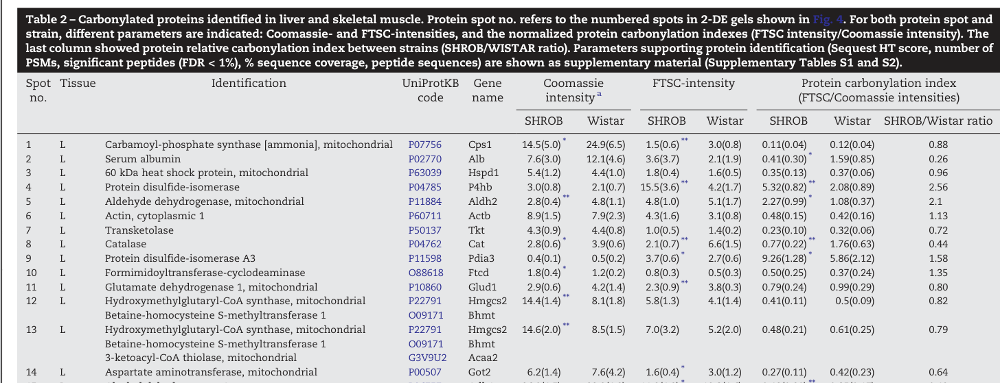

Hmgcs2 encodes the mitochondrial isoform of HMG-CoA synthase, the rate-limiting enzyme of ketogenesis. It catalyzes the condensation of acetyl-CoA with acetoacetyl-CoA to form HMG-CoA in the mitochondrial matrix (EC 2.3.3.10). HMG-CoA is subsequently cleaved by HMG-CoA lyase to produce acetoacetate, the first ketone body. The enzyme is expressed primarily in liver, kidney, and intestine, with atypical expression in subcutaneous adipose tissue of male rats. Its activity is regulated post-translationally by succinylation (inhibited) and desuccinylation by SIRT5 (activated), as well as transcriptionally by insulin (via FOXO3a/FKHRL1 repression), glucagon, glucocorticoids, cAMP, and fatty acids via PPARalpha. It is distinct from the cytosolic HMGCS1, which feeds the mevalonate/cholesterol biosynthetic pathway.
| GO Term | Evidence | Action | Reason |
|---|---|---|---|
|
GO:0010142
farnesyl diphosphate biosynthetic process, mevalonate pathway
|
IBA
GO_REF:0000033 |
REMOVE |
Summary: IBA from phylogenetic inference. This annotation conflates the mitochondrial (HMGCS2) and cytosolic (HMGCS1) isoforms. The mitochondrial isoform primarily feeds ketogenesis, not the mevalonate/sterol pathway. The cytosolic HMGCS1 is the relevant paralog for farnesyl diphosphate biosynthesis.
Reason: Paralog conflation -- mitochondrial HMGCS2 feeds ketogenesis, not the mevalonate pathway for isoprenoid/sterol biosynthesis.
Supporting Evidence:
file:rat/Hmgcs2/Hmgcs2-deep-research-falcon.md
The literature distinguishes mitochondrial **HMGCS2** (ketogenesis) from **HMGCS1** (cytosolic HMG‑CoA synthase used in cholesterol biosynthesis), which is essential to avoid cross‑annotation errors
|
|
GO:0004421
hydroxymethylglutaryl-CoA synthase activity
|
IBA
GO_REF:0000033 |
ACCEPT |
Summary: Correct. The core molecular function of Hmgcs2. IBA from phylogenetic inference is consistent with the IDA evidence (PMID:1971108) showing the expressed cDNA product has HMG-CoA synthase activity.
Supporting Evidence:
file:rat/Hmgcs2/Hmgcs2-deep-research-bioreason-sft.md
This chemistry is the committed entry point to ketogenesis
file:rat/Hmgcs2/Hmgcs2-deep-research-falcon.md
catalyzes the condensation of **acetyl‑CoA** with **acetoacetyl‑CoA** to form **3‑hydroxy‑3‑methylglutaryl‑CoA (HMG‑CoA)** and free CoA (with H2O), representing the committed/irreversible step in mitochondrial ketogenesis
|
|
GO:0006084
acetyl-CoA metabolic process
|
IBA
GO_REF:0000033 |
KEEP AS NON CORE |
Summary: Correct. Hmgcs2 consumes acetyl-CoA as a substrate. This is a legitimate annotation but quite broad. More specific terms like ketone body biosynthetic process are more informative.
|
|
GO:0005739
mitochondrion
|
IBA
GO_REF:0000033 |
MODIFY |
Summary: Correct. Mitochondrial localization is well established. The more specific term GO:0005759 (mitochondrial matrix) is supported by IDA evidence (PMID:17971398).
Proposed replacements:
mitochondrial matrix
|
|
GO:0004421
hydroxymethylglutaryl-CoA synthase activity
|
IEA
GO_REF:0000120 |
ACCEPT |
Summary: Correct automated annotation. Consistent with IDA evidence (PMID:1971108) and the core function of this enzyme.
|
|
GO:0005739
mitochondrion
|
IEA
GO_REF:0000120 |
MODIFY |
Summary: Correct but could be more specific. Mitochondrial matrix localization is supported by IDA (PMID:17971398).
Proposed replacements:
mitochondrial matrix
|
|
GO:0006084
acetyl-CoA metabolic process
|
IEA
GO_REF:0000120 |
KEEP AS NON CORE |
Summary: Correct automated annotation. Acetyl-CoA is a direct substrate. Broad but valid.
|
|
GO:0008299
isoprenoid biosynthetic process
|
IEA
GO_REF:0000002 |
REMOVE |
Summary: Misleading for the mitochondrial isoform. InterPro2GO maps HMG-CoA synthase domains to this term because the cytosolic isoform (HMGCS1) feeds the mevalonate pathway for isoprenoid synthesis. The mitochondrial HMGCS2 primarily feeds ketogenesis.
Reason: Paralog conflation in InterPro2GO mapping. The mitochondrial isoform feeds ketogenesis, not isoprenoid biosynthesis.
Supporting Evidence:
file:rat/Hmgcs2/Hmgcs2-deep-research-falcon.md
mitochondrial HMG‑CoA does not freely cross the inner mitochondrial membrane; therefore mitochondrial HMGCS2 is functionally separated from cytosolic HMGCS1, reinforcing the need for precise isoenzyme annotation
|
|
GO:0010142
farnesyl diphosphate biosynthetic process, mevalonate pathway
|
IEA
GO_REF:0000002 |
REMOVE |
Summary: Same paralog conflation issue as the IBA annotation. The mitochondrial isoform is not involved in farnesyl diphosphate biosynthesis.
Reason: Paralog conflation -- applies to cytosolic HMGCS1, not mitochondrial HMGCS2.
|
|
GO:0016746
acyltransferase activity
|
IEA
GO_REF:0000002 |
REMOVE |
Summary: Too general. The thiolase-like superfamily domain maps to this broad term. The specific HMG-CoA synthase activity (GO:0004421) is already annotated and far more informative.
Reason: Redundant with the more specific GO:0004421 annotation.
|
|
GO:0042802
identical protein binding
|
IEA
GO_REF:0000107 |
REMOVE |
Summary: Hmgcs2 forms a homodimer per UniProt (by similarity to human P54868). The term 'identical protein binding' is uninformative about biological function.
Reason: Uninformative term that does not convey specific biological function.
|
|
GO:0046951
ketone body biosynthetic process
|
IEA
GO_REF:0000107 |
ACCEPT |
Summary: Core function. Hmgcs2 catalyzes the rate-limiting step of ketogenesis. Automated Ensembl transfer is consistent with extensive experimental evidence.
Supporting Evidence:
file:rat/Hmgcs2/Hmgcs2-deep-research-falcon.md
HMGCS2 performs the **rate-limiting / first irreversible step of mitochondrial ketogenesis**, generating the precursor used for ketone body production
|
|
GO:0042802
identical protein binding
|
ISS
GO_REF:0000024 |
REMOVE |
Summary: ISS from human ortholog P54868. Homodimer formation is expected but this term is uninformative per curation guidelines.
Reason: Uninformative term per curation guidelines.
|
|
GO:0042802
identical protein binding
|
ISO
GO_REF:0000121 |
REMOVE |
Summary: ISO from human ortholog. Same issue as ISS annotation.
Reason: Uninformative term per curation guidelines.
|
|
GO:0004421
hydroxymethylglutaryl-CoA synthase activity
|
ISO
GO_REF:0000121 |
ACCEPT |
Summary: Correct ISO transfer from human ortholog. Consistent with IDA evidence.
|
|
GO:0006084
acetyl-CoA metabolic process
|
ISO
GO_REF:0000121 |
KEEP AS NON CORE |
Summary: Correct. Broad but valid.
|
|
GO:0046951
ketone body biosynthetic process
|
ISO
GO_REF:0000121 |
ACCEPT |
Summary: Core function. Consistent with experimental evidence.
|
|
GO:0005739
mitochondrion
|
ISO
GO_REF:0000121 |
MODIFY |
Summary: Correct but more specific term available (mitochondrial matrix).
Proposed replacements:
mitochondrial matrix
|
|
GO:0030324
lung development
|
IEP
PMID:7911291 Effect of squalene synthase inhibition on the expression of ... |
MARK AS OVER ANNOTATED |
Summary: PMID:7911291 studies the effect of squalene synthase inhibition on hepatic cholesterol biosynthetic enzymes. The paper shows changes in HMG-CoA synthase mRNA in liver upon treatment with zaragozic acid A. This is about the cholesterol biosynthesis pathway response in liver, not lung development. The annotation appears to be incorrectly assigned to this PMID.
Reason: The cited paper (PMID:7911291) describes hepatic enzyme induction by squalene synthase inhibition, not lung development. Expression during lung maturation is plausible but not supported by this specific reference.
Supporting Evidence:
PMID:7911291
Treating rats with zaragozic acid A, a potent inhibitor of squalene synthase, caused marked increases in hepatic 3-hydroxy-3-methylglutaryl coenzyme A (HMG-CoA) synthase
|
|
GO:0009410
response to xenobiotic stimulus
|
IEP
PMID:11323196 Cholesterol biosynthesis regulation and protein changes in r... |
KEEP AS NON CORE |
Summary: PMID:11323196 shows Hmgcs2 is among the proteins altered by fluvastatin (a statin drug) treatment in rat liver. Fluvastatin is a xenobiotic, and Hmgcs2 expression changes are part of the compensatory upregulation of the cholesterol biosynthesis pathway. Valid IEP.
Supporting Evidence:
PMID:11323196
it is suggested that HMG-CoA synthase and isopentenyl-diphosphate delta-isomerase may be explored as alternative drug targets
|
|
GO:0032869
cellular response to insulin stimulus
|
IEP
PMID:12027802 Down-regulation of the mitochondrial 3-hydroxy-3-methylgluta... |
ACCEPT |
Summary: PMID:12027802 demonstrates that insulin represses HMGCS2 transcription via the forkhead transcription factor FKHRL1/FOXO3a. This is a well-characterized regulatory mechanism directly relevant to Hmgcs2. Strong IEP evidence.
Supporting Evidence:
PMID:12027802
insulin rapidly inhibiting the expression of the mitochondrial 3-hydroxy-3-methylglutaryl-CoA (HMG-CoA) synthase (HMGCS2) gene
|
|
GO:0034696
response to prostaglandin F
|
IEP
PMID:11517196 Opposite effect of prolactin and prostaglandin F(2 alpha) on... |
KEEP AS NON CORE |
Summary: PMID:11517196 uses cDNA arrays to show PGF2alpha inhibits HMG-CoA synthase expression in rat corpus luteum. Valid IEP showing expression change. Non-core regulatory response.
Supporting Evidence:
PMID:11517196
It also inhibited genes involved in estradiol (P-450(AROM)) and cholesterol biosynthesis (HMG-CoA synthase)
|
|
GO:0001822
kidney development
|
IEP
PMID:8099282 Developmental changes in mitochondrial 3-hydroxy-3-methylglu... |
KEEP AS NON CORE |
Summary: PMID:8099282 shows developmental changes in Hmgcs2 mRNA in rat kidney, with expression increasing postnatally and declining at weaning on high-carbohydrate diet. Valid IEP showing developmental regulation. The gene is expressed during kidney maturation but this likely reflects metabolic adaptation rather than a role in kidney organogenesis.
Supporting Evidence:
PMID:8099282
Kidney-cortex mitochondria from suckling rats were able to produce low amounts of ketone bodies from oleate
|
|
GO:0004421
hydroxymethylglutaryl-CoA synthase activity
|
IDA
PMID:1971108 Rat mitochondrial and cytosolic 3-hydroxy-3-methylglutaryl-C... |
ACCEPT |
Summary: The defining IDA evidence. PMID:1971108 cloned the rat mitochondrial HMG-CoA synthase cDNA and showed the E. coli expression product has HMG-CoA synthase activity. This is the core molecular function.
Supporting Evidence:
PMID:1971108
The expression product of the cDNA in Escherichia coli has HMG-CoA synthase activity
|
|
GO:0010038
response to metal ion
|
IEP
PMID:8100835 Vanadate treatment restores the expression of genes for key ... |
KEEP AS NON CORE |
Summary: PMID:8100835 shows vanadate treatment of diabetic rats restores Hmgcs2 gene expression to normal levels. Vanadate acts as an insulin mimetic, so the effect is likely through insulin signaling rather than a direct metal ion response. The annotation is technically valid as IEP (expression changes with metal treatment) but somewhat misleading.
Reason: Vanadate is an insulin mimetic; the effect on Hmgcs2 is likely mediated through insulin signaling pathways rather than direct metal ion response.
Supporting Evidence:
PMID:8100835
The increase in the expression of the mitochondrial 3-hydroxy-3-methylglutaryl-CoA synthase (HMGCoAS) gene, the key regulatory enzyme in the ketone bodies production pathway, observed in diabetic rats was also blocked by vanadate
|
|
GO:0032870
cellular response to hormone stimulus
|
IEP
PMID:9025717 Post-transcriptional induction of beta 1-adrenergic receptor... |
KEEP AS NON CORE |
Summary: PMID:9025717 shows T3 (triiodothyronine) induces mitochondrial HMG-CoA synthase expression in C6 glioma cells engineered to express thyroid hormone receptors. Valid IEP but this is a broad term. More specific hormone-response annotations exist.
Supporting Evidence:
PMID:9025717
Cells expressing TR alpha 1, but not wild-type cells, were responsive to T3 as shown by increased expression of mitochrondrial hydroxymethylglutaryl CoA synthase after T3 exposure
|
|
GO:0033555
multicellular organismal response to stress
|
IEP
PMID:16962226 Restraint stress alters the duodenal expression of genes imp... |
KEEP AS NON CORE |
Summary: PMID:16962226 shows restraint stress (2-week immobilization) upregulates Hmgcs2 expression in rat duodenum, likely mediated by glucocorticoids. Valid IEP. The term is broad but appropriate for a whole-organism stress paradigm.
Supporting Evidence:
PMID:16962226
immobilization preferentially stimulated the expression of genes related to lipid metabolism, including genes encoding mitochondrial HMG-CoA synthase
|
|
GO:0033762
response to glucagon
|
IEP
PMID:1967579 Glucagon activates mitochondrial 3-hydroxy-3-methylglutaryl-... |
ACCEPT |
Summary: PMID:1967579 directly demonstrates glucagon activates mitochondrial HMG-CoA synthase by decreasing succinylation. This is both an expression and activity response -- glucagon is a key physiological activator of ketogenesis through this enzyme. Core regulatory response.
Supporting Evidence:
PMID:1967579
glucagon increases the activity of HMG-CoA synthase by lowering the concentration of succinyl-CoA and thus decreasing the extent of succinylation of the enzyme
|
|
GO:0034284
response to monosaccharide
|
IEP
PMID:1967579 Glucagon activates mitochondrial 3-hydroxy-3-methylglutaryl-... |
KEEP AS NON CORE |
Summary: PMID:1967579 used mannoheptulose (a glucose antagonist) to activate HMG-CoA synthase. The enzyme response reflects the metabolic shift from fed to fasted state. Valid IEP.
Supporting Evidence:
PMID:1967579
The enzyme is less active in extracts of whole liver from control rats than from rats treated with glucagon or mannoheptulose
|
|
GO:0051591
response to cAMP
|
IEP
PMID:7902069 Regulation of mitochondrial 3-hydroxy-3-methylglutaryl-coenz... |
ACCEPT |
Summary: PMID:7902069 shows mitochondrial HMG-CoA synthase protein rapidly increases in response to cyclic AMP. cAMP is a downstream mediator of glucagon signaling, so this is mechanistically linked to the core ketogenic regulation.
Supporting Evidence:
PMID:7902069
The amount of mitochondrial HMG-CoA synthase protein rapidly increased in response to cyclic AMP, dexamethasone, starvation, fat feeding, and diabetes
|
|
GO:0070543
response to linoleic acid
|
IEP
PMID:16216487 Differential action of 13-HPODE on PPARalpha downstream gene... |
KEEP AS NON CORE |
Summary: PMID:16216487 tests 13-HPODE (a linoleic acid oxidation product) on PPARalpha target genes including mitochondrial HMG-CoA synthase. The paper found 13-HPODE activated PPARalpha in rat Fao cells (increasing expression of some target genes) but specifically tested HMG-CoA synthase only in HepG2 cells where no effect was seen. Valid IEP but marginal evidence.
Supporting Evidence:
PMID:16216487
no remarkable induction of the PPARalpha target genes ACO, CPT1A, mitochondrial HMG-CoA synthase and delta9-desaturase was observed
|
|
GO:0001889
liver development
|
IEP
PMID:8620869 The expression of mitochondrial 3-hydroxy-3-methylglutaryl-c... |
KEEP AS NON CORE |
Summary: PMID:8620869 shows developmental regulation of Hmgcs2 in neonatal rat liver with transcriptional control. Expression increases postnatally and follows a pattern consistent with metabolic maturation. Valid IEP showing developmental expression changes.
Supporting Evidence:
PMID:8620869
hepatic pre-mRNA of mitochondrial HOMeGlt-CoA synthase from suckling rats follows a pattern of expression identical to that of mature hepatic mRNA, which also suggests a transcriptional modulation of this gene in the liver of neonatal rats
|
|
GO:0005759
mitochondrial matrix
|
IDA
PMID:17971398 Identification of palmitoylated mitochondrial proteins using... |
ACCEPT |
Summary: PMID:17971398 identified palmitoylated mitochondrial proteins using azido-palmitate and confirmed Hmgcs2 as a mitochondrial matrix protein. This provides direct localization evidence.
Supporting Evidence:
PMID:17971398
we identified 21 putative palmitoylated proteins in the rat liver mitochondrial matrix...and confirmed the palmitoylation of newly identified mitochondrial 3-hydroxy-3-methylglutaryl-CoA synthase
file:rat/Hmgcs2/Hmgcs2-deep-research-falcon.md
synthesized as an immature cytosolic protein bearing a **mitochondrial targeting peptide** that is cleaved after import into the mitochondrial matrix, consistent with matrix localization for ketogenesis
|
|
GO:0007494
midgut development
|
IEP
PMID:8620869 The expression of mitochondrial 3-hydroxy-3-methylglutaryl-c... |
KEEP AS NON CORE |
Summary: PMID:8620869 shows developmental expression of Hmgcs2 in neonatal rat intestine under transcriptional control. Expression in intestinal enterocytes reflects metabolic maturation. Valid IEP.
Supporting Evidence:
PMID:8620869
Enterocytes are the only intestinal cells that express this ketogenic enzyme, as deduced from immunolocalization experiments
|
|
GO:0009266
response to temperature stimulus
|
IEP
PMID:10357839 Atypical expression of mitochondrial 3-hydroxy-3-methylgluta... |
MARK AS OVER ANNOTATED |
Summary: PMID:10357839 tested mtHMG-CoA synthase expression in subcutaneous adipose tissue at 24C vs 4C and found expression is independent of thermic environment. The annotation is technically valid (expression was measured under different temperatures) but the result was negative -- no change observed.
Reason: The cited study (PMID:10357839) specifically found that mtHMG-CoA synthase expression in subcutaneous adipose tissue is independent of temperature.
Supporting Evidence:
PMID:10357839
the expression of mtHMG-CoA synthase in SC adipose deposit is independent of the nutritional state (fed versus starved) or of the thermic environment (24 degrees C versus 4 degrees C)
|
|
GO:0009617
response to bacterium
|
IEP
PMID:14686922 Expression of mitochondrial HMGCoA synthase and glutaminase ... |
KEEP AS NON CORE |
Summary: PMID:14686922 shows colonic Hmgcs2 expression is modulated by bacterial colonization, particularly butyrate-producing species. Valid IEP showing that the intestinal microbiome regulates this ketogenic enzyme.
Supporting Evidence:
PMID:14686922
the intestinal flora, through butyrate production, could control the expression of colonic mHMGCoA synthase and glutaminase
|
|
GO:0032868
response to insulin
|
IEP
PMID:9143333 The effect of fasting/refeeding and insulin treatment on the... |
ACCEPT |
Summary: PMID:9143333 shows insulin decreases Hmgcs2 mRNA and activity in suckling rat liver and intestine. Strong evidence for insulin regulation of ketogenesis via this enzyme. Core regulatory response.
Supporting Evidence:
PMID:9143333
Long-term insulin treatment had little effect on the mRNA levels for CPT I or mit. HMG-CoA synthase, but both the expressed and total activities of mit. HMG-CoA synthase were reduced by half in both intestine and liver
|
|
GO:0033574
response to testosterone
|
IEP
PMID:10357839 Atypical expression of mitochondrial 3-hydroxy-3-methylgluta... |
KEEP AS NON CORE |
Summary: PMID:10357839 shows testosterone controls atypical Hmgcs2 expression in subcutaneous adipose tissue. Castration suppresses expression; testosterone replacement restores it. Valid IEP.
Supporting Evidence:
PMID:10357839
The expression of mtHMG-CoA synthase is suppressed in SC fat pads of castrated male rats whereas treatment of castrated rats with testosterone restores a normal level of expression
|
|
GO:0034014
response to triglyceride
|
IEP
PMID:11551854 Effects of fatty acids and growth hormone on liver fatty aci... |
KEEP AS NON CORE |
Summary: PMID:11551854 shows dietary triglycerides (10% corn oil) increase Hmgcs2 mRNA in hypophysectomized rats, but only in the presence of growth hormone. Valid IEP showing nutrient-hormone interaction.
Supporting Evidence:
PMID:11551854
Dietary triglycerides increased mitochondrial hydroxymethylglutaryl-CoA synthase mRNA only in the presence of GH
|
|
GO:0042594
response to starvation
|
IEP
PMID:10357839 Atypical expression of mitochondrial 3-hydroxy-3-methylgluta... |
ACCEPT |
Summary: PMID:10357839 tested starvation effects on Hmgcs2 in adipose tissue and found expression is independent of nutritional state in subcutaneous fat. However, starvation induction of Hmgcs2 in liver is one of the best-established responses (PMID:7902069). The annotation is valid but this specific reference shows no effect in adipose tissue.
Reason: While the specific cited reference shows no starvation response in adipose tissue, Hmgcs2 starvation induction in liver is extensively documented and is the core physiological context.
Supporting Evidence:
PMID:7902069
The amount of mitochondrial HMG-CoA synthase protein rapidly increased in response to cyclic AMP, dexamethasone, starvation, fat feeding, and diabetes
|
|
GO:0045471
response to ethanol
|
IEP
PMID:17964421 Effects of 4-hydroxynonenal on mitochondrial 3-hydroxy-3-met... |
KEEP AS NON CORE |
Summary: PMID:17964421 shows chronic ethanol consumption increases 4-hydroxynonenal (4-HNE) adduct formation on Hmgcs2, with compensatory increase in protein levels. Valid IEP.
Supporting Evidence:
PMID:17964421
ethanol consumption increases the formation of a 4-HNE adduct with mitochondrial HMG-CoA synthase, which has the potential to inactivate the enzyme in situ
|
|
GO:0046951
ketone body biosynthetic process
|
IEP
PMID:12399220 Impaired ketogenesis is a major mechanism for disturbed hepa... |
ACCEPT |
Summary: PMID:12399220 shows impaired ketogenesis in cholestatic rats with reduced HMG-CoA synthase mRNA and protein. After bile flow restoration, HMG-CoA synthase recovers slowly (3 months). Directly demonstrates Hmgcs2 as the rate-limiting factor in ketogenesis. Core function.
Supporting Evidence:
PMID:12399220
reduced activity of HMG-CoA synthase is the major factor
|
|
GO:0051384
response to glucocorticoid
|
IEP
PMID:9546617 The effect of dexamethasone treatment on the expression of t... |
KEEP AS NON CORE |
Summary: PMID:9546617 shows dexamethasone decreases Hmgcs2 mRNA and activity in suckling rat liver and intestine. Valid IEP showing glucocorticoid regulation.
Supporting Evidence:
PMID:9546617
Dexamethasone produced a 2 fold increase in mRNA and activity of CPT I in intestine, but led to a decrease in mit. HMG-CoA synthase
|
|
GO:0060416
response to growth hormone
|
IEP
PMID:11551854 Effects of fatty acids and growth hormone on liver fatty aci... |
KEEP AS NON CORE |
Summary: PMID:11551854 shows growth hormone is required for dietary triglyceride-mediated induction of Hmgcs2 mRNA. Valid IEP showing GH-dependent regulation.
Supporting Evidence:
PMID:11551854
Dietary triglycerides increased mitochondrial hydroxymethylglutaryl-CoA synthase mRNA only in the presence of GH
|
|
GO:0060612
adipose tissue development
|
IEP
PMID:10357839 Atypical expression of mitochondrial 3-hydroxy-3-methylgluta... |
MARK AS OVER ANNOTATED |
Summary: PMID:10357839 shows Hmgcs2 expression appears in subcutaneous adipose tissue from 9 weeks of age in male rats. This is age-dependent expression onset, not direct involvement in adipose development. Expression is in the stromal vascular fraction, possibly in microcapillaries.
Reason: The gene is expressed in adipose tissue in an age/sex-dependent manner but is not involved in adipose tissue development per se. Expression likely reflects metabolic capacity of the tissue.
Supporting Evidence:
PMID:10357839
This atypical mtHMG-CoA synthase gene expression is dependent on the age (from 9 weeks of age) and sex (higher in male than in female) of the rats
|
|
GO:0071222
cellular response to lipopolysaccharide
|
IEP
PMID:11578593 Analysis of genes differentially expressed in astrocytes sti... |
KEEP AS NON CORE |
Summary: PMID:11578593 shows Hmgcs2 is upregulated in LPS-stimulated astrocytes at 2h and 8h. Valid IEP showing inflammatory stimulus response.
Supporting Evidence:
PMID:11578593
mitochondrial hydroxymethylglutaryl-CoA synthase (HMG-CoA synthase)...were also up-regulated at 2 and 8 h
|
|
GO:0071230
cellular response to amino acid stimulus
|
IEP
PMID:20508999 Dissimilar properties of vaccenic versus elaidic acid in bet... |
MARK AS OVER ANNOTATED |
Summary: PMID:20508999 compares vaccenic vs elaidic acid effects on beta- oxidation genes. The paper does not specifically test amino acid stimuli on Hmgcs2. The reference may be misassigned for this particular GO term.
Reason: PMID:20508999 tests trans fatty acid isomers, not amino acid stimuli. Possible reference misassignment.
Supporting Evidence:
PMID:20508999
gene expression of CPT I, hydroxyacyl-CoA dehydrogenase and hydroxymethylglutaryl-CoA synthase was at least 100% increased
|
|
GO:0071398
cellular response to fatty acid
|
IEP
PMID:20508999 Dissimilar properties of vaccenic versus elaidic acid in bet... |
KEEP AS NON CORE |
Summary: PMID:20508999 shows elaidic acid (trans-9-C18:1) increases Hmgcs2 gene expression by >100% in rat hepatocytes compared to controls, while vaccenic acid does not. Valid IEP showing differential fatty acid regulation.
Supporting Evidence:
PMID:20508999
gene expression of CPT I, hydroxyacyl-CoA dehydrogenase and hydroxymethylglutaryl-CoA synthase was at least 100% increased
|
|
GO:0070542
response to fatty acid
|
IEP
PMID:10796071 Mitochondrial 3-hydroxy-3-methylglutaryl coenzyme A synthase... |
KEEP AS NON CORE |
Summary: PMID:10796071 shows 3-thia fatty acids increase Hmgcs2 activity, protein, and mRNA in rat liver. Valid IEP showing fatty acid regulation of ketogenesis.
Supporting Evidence:
PMID:10796071
Hepatic mitochondrial carnitine palmitoyltransferase (CPT) -II and 3-hydroxy-3-methylglutaryl coenzyme A (HMG-CoA) synthase activities, immunodetectable proteins, and mRNA levels increased in parallel
|
|
GO:0071385
cellular response to glucocorticoid stimulus
|
IEP
PMID:9798904 Hormonal regulation of the mRNA encoding the ketogenic enzym... |
KEEP AS NON CORE |
Summary: PMID:9798904 shows hydrocortisone causes a 4-fold increase in Hmgcs2 mRNA in neonatal cortical astrocytes and meningeal fibroblasts. Valid IEP. Note this contrasts with the dexamethasone effect in suckling rat liver (PMID:9546617), indicating tissue- specific glucocorticoid responses.
Supporting Evidence:
PMID:9798904
glucocorticoid hydrocortisone effects a selective fourfold increase in mHS mRNA abundances in both neonatal meningeal fibroblasts and neonatal cortical astrocytes
|
|
GO:0007584
response to nutrient
|
IEP
PMID:17103110 Chronic quercetin exposure affects fatty acid catabolism in ... |
KEEP AS NON CORE |
Summary: PMID:17103110 shows chronic dietary quercetin upregulates Hmgcs2 in rat lung. Valid IEP showing nutrient (flavonoid) regulation of fatty acid catabolism genes.
Supporting Evidence:
PMID:17103110
fatty acid catabolism pathways, like beta-oxidation and ketogenesis, are up-regulated by the long-term quercetin intervention
|
|
GO:0009410
response to xenobiotic stimulus
|
IEP
PMID:15107969 Molecular mechanism investigation of phenobarbital-induced s... |
KEEP AS NON CORE |
Summary: PMID:15107969 shows phenobarbital treatment decreases Hmgcs2 mRNA in rat liver. Valid IEP.
Supporting Evidence:
PMID:15107969
it was only weakly observed after the repeated PB treatments, presumably owing to a decrease in HMG-CoA synthase mRNA content
|
|
GO:0043434
response to peptide hormone
|
IEP
PMID:12027802 Down-regulation of the mitochondrial 3-hydroxy-3-methylgluta... |
KEEP AS NON CORE |
Summary: PMID:12027802 demonstrates insulin (a peptide hormone) represses Hmgcs2 via FKHRL1. This is a more general version of the insulin response annotation already present. Redundant with GO:0032869.
Reason: Redundant with the more specific insulin response annotation.
Supporting Evidence:
PMID:12027802
insulin rapidly inhibiting the expression of the mitochondrial 3-hydroxy-3-methylglutaryl-CoA (HMG-CoA) synthase (HMGCS2) gene, which is a key control site of ketogenesis
|
|
GO:0004421
hydroxymethylglutaryl-CoA synthase activity
|
TAS
PMID:8097464 The rat mitochondrial 3-hydroxy-3-methylglutaryl-coenzyme-A-... |
ACCEPT |
Summary: PMID:8097464 characterizes the gene structure and confirms liver-specific expression and multihormonal regulation. TAS for the enzymatic function. Consistent with IDA evidence.
Supporting Evidence:
PMID:8097464
Mitochondrial 3-hydroxy-3-methylglutaryl-coenzyme-A (HMG-CoA) synthase, a liver-specific enzyme, is a constituent of the HMG-CoA cycle responsible for ketone-body synthesis
|
|
GO:0046951
ketone body biosynthetic process
|
TAS
PMID:8097464 The rat mitochondrial 3-hydroxy-3-methylglutaryl-coenzyme-A-... |
ACCEPT |
Summary: PMID:8097464 describes Hmgcs2 as a constituent of the HMG-CoA cycle responsible for ketone-body synthesis. Valid TAS.
Supporting Evidence:
PMID:8097464
a liver-specific enzyme, is a constituent of the HMG-CoA cycle responsible for ketone-body synthesis
|
Q: Does the palmitoylation of Hmgcs2 (identified in PMID:17971398) regulate its enzymatic activity or localization in vivo?
Q: What is the physiological significance of Hmgcs2 expression in the stromal vascular fraction of subcutaneous adipose tissue?
Suggested experts: Pegorier JP, Thumelin S
Q: How do the tissue-specific glucocorticoid effects on Hmgcs2 (stimulatory in astrocytes, inhibitory in suckling liver) arise mechanistically?
Suggested experts: Cullingford TE, Hegardt FG
Experiment: Site-directed mutagenesis of candidate palmitoylation sites on Hmgcs2, followed by in vitro activity assays and palmitoylation status assessment, to determine whether palmitoylation directly modulates catalytic activity.
Hypothesis: Palmitoylation of Hmgcs2 at specific cysteine residues inhibits enzymatic activity similar to succinylation.
Experiment: Isolate stromal vascular fraction from male rat subcutaneous adipose tissue, measure ketone body production rates, and assess whether ketone bodies affect nearby adipocyte differentiation or lipolysis.
Hypothesis: Hmgcs2 expression in subcutaneous adipose stromal cells represents a local ketogenic capacity for paracrine signaling.
Experiment: Comparative proteomics of Hmgcs2 post-translational modifications (succinylation, acetylation, palmitoylation, phosphorylation) under fed, fasted, and diabetic conditions to build an integrated map of activity regulation.
I begin with the InterPro architecture. The polypeptide is built on a thiolase-like scaffold captured by IPR016039 (Thiolase-like homologous superfamily, residues 49–508), which is subdivided into an N-terminal catalytic lobe IPR013528 (Hydroxymethylglutaryl-coenzyme A synthase, N-terminal domain, residues 50–223) and a C-terminal catalytic lobe IPR013746 (Hydroxymethylglutaryl-coenzyme A synthase, C-terminal domain, residues 224–506). The N-terminal region also carries IPR016039 (Thiolase-like homologous superfamily, residues 53–221), while the C-terminal region is likewise encompassed by IPR016039 (Thiolase-like homologous superfamily, residues 224–505). The family-level signature IPR010122 (Hydroxymethylglutaryl-CoA synthase, eukaryotic, residues 50–506) specifies the eukaryotic orthologous lineage, and the catalytic center is pinpointed by IPR000590 (Hydroxymethylglutaryl-coenzyme A synthase, active site, residues 154–169). This two-lobed thiolase-like fold creates an acyl-enzyme chemistry platform in which the active-site cysteine within 154–169 forms a covalent thioester with an acyl substrate, while the opposing lobe positions acetyl-CoA for a Claisen condensation. The eukaryotic family context and the thiolase-like superfamily geometry together cause the specific condensation of acetoacetyl-CoA with acetyl-CoA to produce 3-hydroxy-3-methylglutaryl-CoA, which is the molecular function formalized as GO:0004421 hydroxymethylglutaryl-CoA synthase activity.
This chemistry is the committed entry point to ketogenesis: by generating HMG-CoA, the enzyme supplies substrate to HMG-CoA lyase to form acetoacetate, the precursor of ketone bodies. Thus, the catalytic activity directly drives the GO:1902224 ketone body metabolic process. Because ketone production is mobilized when carbohydrate supply is limited or when fatty acid flux is high, the enzyme’s activity integrates with systemic energy signaling. Nutrient scarcity and hormonal cues (insulin, glucagon, growth hormone, cAMP, glucocorticoids, testosterone, prostaglandins) modulate expression and flux through this step, aligning the enzyme with GO:0042594 response to starvation, GO:0007584 response to nutrient, GO:0032868 cellular response to insulin stimulus, GO:0033762 response to glucagon, GO:0060416 response to growth hormone, GO:0051591 response to cAMP, GO:0071385 cellular response to glucocorticoid stimulus, GO:0033574 response to testosterone, GO:0071417 cellular response to organonitrogen compound, GO:0034694 response to prostaglandin, and GO:0071230 cellular response to amino acid stimulus. Xenobiotic and inflammatory cues (GO:0009410 response to xenobiotic stimulus and GO:0071222 cellular response to lipopolysaccharide) as well as ethanol exposure (GO:0045471 response to ethanol) reshape hepatic metabolism and can upshift ketogenesis, which this enzyme enables. Fatty acid availability (GO:0071398 cellular response to fatty acid) is a proximal determinant of acetyl-CoA supply, thereby causally linking the enzyme to GO:0071398. Developmental contexts that rely on ketone bodies for energy or signaling—GO:0007420 brain development, GO:0030324 lung development, GO:0001822 kidney development, GO:0007494 midgut development, and GO:0001889 liver development—are supported by this catalytic step, which provides the metabolic currency that fuels these tissues and organs during maturation and specialized states.
The thiolase-like fold lacks transmembrane segments and is characteristic of soluble matrix enzymes. The eukaryotic HMG-CoA synthase family is targeted to mitochondria, and the catalytic requirements (acetyl-CoA, acetoacetyl-CoA, and CoA handling) are met in the mitochondrial matrix. Therefore, the cellular component is the GO:0005759 mitochondrial matrix, consistent with a soluble enzyme that assembles transient metabolons with other matrix ketogenesis enzymes.
Mechanistically, the N-terminal thiolase-like lobe positions acetoacetyl-CoA and forms a covalent acyl-enzyme intermediate via the active-site cysteine (154–169). The C-terminal thiolase-like lobe binds acetyl-CoA and orchestrates its attack to forge the C–C bond, yielding HMG-CoA. In the matrix, the product is likely handed directly to hydroxymethylglutaryl-CoA lyase to minimize diffusion and protect reactive thioesters. This predicts physical or functional coupling with mitochondrial HMG-CoA lyase and with upstream acetyl-CoA–producing and –transfer reactions. Accordingly, plausible interaction partners include mitochondrial 3-ketoacyl-CoA thiolase and acetyl-CoA acetyltransferase (supplying acetoacetyl-CoA), the trifunctional enzyme subunit beta and enoyl-CoA hydratase/3,2-trans-enoyl-CoA isomerase (feeding acetyl-CoA via β-oxidation), and succinyl-CoA:3-ketoacid coenzyme A transferase 1 (linking ketone body interconversion). Coordination with 3-hydroxy-3-methylglutaryl-coenzyme A reductase and squalene monooxygenase is expected at the systems level: when reductase operates in the cytosol to make sterols, the mitochondrial synthase’s activity can shift toward ketogenesis, and cross-compartment regulation may involve regulatory crosstalk rather than stable complexes. Cytosolic acetyl-CoA acetyltransferase and cytosolic HMG-CoA lyase may engage during specific conditions or reflect exchange of metabolites and regulatory signals, but the primary catalytic assembly for ketogenesis occurs in the mitochondrial matrix.
## Functional Summary
A soluble mitochondrial matrix enzyme that catalyzes the Claisen condensation of acetyl-CoA with acetoacetyl-CoA to form HMG-CoA, committing carbon flux into ketogenesis. By generating HMG-CoA for downstream cleavage to acetoacetate, it enables ketone body production during nutrient limitation and hormonal activation, integrates signals from insulin, glucagon, cAMP, and other systemic cues, and supports energy demands in developing and metabolically stressed tissues. The thiolase-like fold organizes a covalent acyl-enzyme intermediate and positions substrates for efficient carbon–carbon bond formation, likely operating within a matrix metabolon that channels intermediates to lyase and couples to β-oxidation–derived acetyl-CoA supply.
## UniProt Summary
Catalyzes the condensation of acetyl-CoA with acetoacetyl-CoA to form HMG-CoA, which is converted to acetoacetate by HMG-CoA reductase (HMGCR). Mediates the metabolic flux during ketogenesis.
## InterPro Domains
- IPR016039: Thiolase-like (homologous_superfamily) [49-508]
- IPR010122: Hydroxymethylglutaryl-CoA synthase, eukaryotic (family) [50-506]
- IPR013528: Hydroxymethylglutaryl-coenzyme A synthase, N-terminal (domain) [50-223]
- IPR016039: Thiolase-like (homologous_superfamily) [53-221]
- IPR000590: Hydroxymethylglutaryl-coenzyme A synthase, active site (active_site) [154-169]
- IPR013746: Hydroxymethylglutaryl-coenzyme A synthase, C-terminal domain (domain) [224-506]
- IPR016039: Thiolase-like (homologous_superfamily) [224-505]
## GO Term Predictions
### Molecular Function
### Biological Process
### Cellular Component
The research report should be a detailed narrative explaining the function, biological processes, and localization of the gene product. Citations should be given for all claims.
You should prioritize authoritative reviews and primary scientific literature when conducting research. You can supplement
this with annotations you find in gene/protein databases, but these can be outdated or inaccurate.
We are specifically interested in the primary function of the gene - for enzymes, what reaction is catalyzed, and what is the substrate specificity? For transporters, what is the substrate? For structural proteins or adapters, what is the broader structural role? For signaling molecules, what is the role in the pathway.
We are interested in where in or outside the cell the gene product carries out its function.
We are also interested in the signaling or biochemical pathways in which the gene functions. We are less interested in broad pleiotropic effects, except where these elucidate the precise role.
Include evidence where possible. We are interested in both experimental evidence as well as inference from structure, evolution, or bioinformatic analysis. Precise studies should be prioritized over high-throughput, where available.
Target confirmed: Rat (Rattus norvegicus) gene Hmgcs2 encodes mitochondrial hydroxymethylglutaryl‑CoA synthase (HMGCS2). A rat proteomics table explicitly maps Hmgcs2 → UniProtKB accession P22791 and annotates the protein as mitochondrial hydroxymethylglutaryl‑CoA synthase, validating that the accession/gene/organism match the requested target (mendez2014targetsofprotein media 0029b5b6, mendez2014targetsofprotein pages 10-10).
Not the cytosolic isoenzyme: The literature distinguishes mitochondrial HMGCS2 (ketogenesis) from HMGCS1 (cytosolic HMG‑CoA synthase used in cholesterol biosynthesis), which is essential to avoid cross‑annotation errors (suresh2025notjustan pages 13-15).
HMGCS2 is the mitochondrial HMG‑CoA synthase (EC 2.3.3.10 per UniProt context; reaction chemistry supported here by literature) that catalyzes the condensation of acetyl‑CoA with acetoacetyl‑CoA to form 3‑hydroxy‑3‑methylglutaryl‑CoA (HMG‑CoA) and free CoA (with H2O), representing the committed/irreversible step in mitochondrial ketogenesis (asif2022theroleof pages 21-25, suresh2025notjustan pages 13-15, braga2016aplicaçãodeferramentas pages 183-186).
Reaction (as described in sources): acetyl‑CoA + acetoacetyl‑CoA (+ H2O) → HMG‑CoA + CoA (braga2016aplicaçãodeferramentas pages 183-186).
Substrate specificity (immediate substrates): acetyl‑CoA and acetoacetyl‑CoA (also referenced as AcAc‑CoA) (asif2022theroleof pages 21-25, suresh2025notjustan pages 13-15).
HMGCS2 produces mitochondrial HMG‑CoA, which is subsequently cleaved by HMG‑CoA lyase (HMGCL) to yield acetoacetate, enabling production of the circulating ketone bodies β‑hydroxybutyrate and acetone (asif2022theroleof pages 21-25, suresh2025notjustan pages 13-15).
Compartmentation principle: Reviews emphasize that mitochondrial HMG‑CoA does not freely cross the inner mitochondrial membrane; therefore mitochondrial HMGCS2 is functionally separated from cytosolic HMGCS1, reinforcing the need for precise isoenzyme annotation (suresh2025notjustan pages 13-15).
HMGCS2 is a mitochondrial enzyme; one mechanistic description notes it is synthesized as an immature cytosolic protein bearing a mitochondrial targeting peptide that is cleaved after import into the mitochondrial matrix, consistent with matrix localization for ketogenesis (asif2022theroleof pages 21-25). Rat proteomics additionally annotates the P22791‑linked protein as mitochondrial, supporting localization in the rat system (mendez2014targetsofprotein media 0029b5b6).
Ketogenesis is activated in energy‑stress states such as fasting, exercise, ketogenic diets, and diabetes, and can also be increased during SGLT2 inhibitor therapy (suresh2025notjustan pages 1-2). Reported circulating ketone concentrations are ~0.05–0.4 mM baseline, 1–2 mM with fasting/exercise, and 6–8 mM with prolonged fasting (suresh2025notjustan pages 1-2).
A 2023 rapid communication reports that liver‑specific Hmgcs2 knockout mice fail to mount fasting‑induced hyperketonemia: wild‑type mice increased blood β‑hydroxybutyrate ~2‑fold after 24 h fasting, whereas LKO did not (zhou2023liverhmgcs2is pages 1-3). This study links impaired hepatic ketogenesis to altered lipid handling and liver injury markers under fasting, supporting the concept that HMGCS2 protects liver lipid homeostasis during nutrient deprivation (zhou2023liverhmgcs2is pages 1-3).
A 2024 study expands functional roles beyond liver by showing colonic/intestinal Hmgcs2 contributes to circulating ketones and protects against experimental colitis; conditional intestinal Hmgcs2 knockout mice show lower fasting blood ketones, and loss of colonic Hmgcs2 associates with barrier dysfunction and increased susceptibility to colitis (bass2024colonicketogenesisa pages 1-2). The same work reports human inflammatory bowel disease datasets with >75% reduction of HMGCS2 mRNA in inflamed colon (P < 0.001) and notes microbiota dependence (reduced expression in germ‑free/antibiotic‑treated mice) (bass2024colonicketogenesisa pages 2-4, bass2024colonicketogenesisa pages 1-2).
A 2024 mechanistic study reports that tacrolimus suppresses HMGCS2 expression and ketogenesis and links this to hepatic lipid accumulation and mitochondrial dysfunction. In mice, tacrolimus dosing (2.5 mg·kg⁻¹·day⁻¹ for 10 weeks) induced dyslipidemia and hepatic lipid deposition; restoration of hepatic HMGCS2 via AAV8‑TBG‑HMGCS2 reversed lipid deposition and improved mitochondrial parameters (li2024restorationofhmgcs2mediated pages 1-2). Mechanistically, tacrolimus increased FoxO1 Ser256 phosphorylation and impaired FoxO1 promoter binding, consistent with transcriptional suppression of Hmgcs2 (li2024restorationofhmgcs2mediated pages 5-8).
A 2023 review reiterates HMGCS2 as the mitochondrial, rate‑limiting ketogenesis enzyme and emphasizes how loss of ketogenesis can cause mitochondrial acetyl‑CoA accumulation and excess protein acetylation, potentially impairing mitochondrial function and promoting ectopic lipid deposition (arima2023theimpactof pages 3-4). The same review frames ketone metabolism as translationally relevant to cardiovascular disease and metabolic disorders, with mitochondria as the central context for both synthesis and utilization pathways (arima2023theimpactof pages 1-3, arima2023theimpactof pages 4-5).
Reviews emphasize that ketogenesis (and HMGCS2 transcriptional control via AMPK/PPARα pathways) is relevant during SGLT2 inhibitor therapy, which elevates ketones and can increase risk of ketoacidosis, underscoring the clinical need to monitor ketone status in susceptible settings (suresh2025notjustan pages 19-20, suresh2025notjustan pages 17-19).
A 2023 review notes a translational implementation where intravenous β‑hydroxybutyrate produced short‑term improvements in cardiac output in patients with heart failure with reduced ejection fraction, supporting clinical investigation of ketone elevation as therapy, while emphasizing risk/benefit and context dependence (arima2023theimpactof pages 5-7).
The 2024 tacrolimus study directly addresses a real‑world problem (transplant immunosuppression–associated dyslipidemia), proposing that suppression of HMGCS2‑mediated ketogenesis contributes mechanistically and that restoring HMGCS2 can reverse lipid deposition in vivo (mouse liver gene delivery), suggesting a potential therapeutic axis to mitigate drug‑induced metabolic injury (li2024restorationofhmgcs2mediated pages 1-2, li2024restorationofhmgcs2mediated pages 5-8).
The 2024 colonic ketogenesis study provides a mechanistic basis for considering microbiota‑targeted strategies to support colonic Hmgcs2 expression/ketogenesis as a protective factor in colitis models, consistent with observations that HMGCS2 is downregulated in human IBD datasets (bass2024colonicketogenesisa pages 2-4, bass2024colonicketogenesisa pages 1-2).
Consensus view: Authoritative reviews describe HMGCS2 as the mitochondrial, rate‑limiting ketogenesis enzyme whose output (ketone bodies) functions both as an alternative fuel and as a signaling/epigenetic input (arima2023theimpactof pages 1-3, suresh2025notjustan pages 1-2). These reviews emphasize layered regulation—hormonal (insulin vs glucagon), transcriptional (PPARα/FOXA2/CREB), and post‑translational modifications (phosphorylation, acetylation, succinylation)—as central to interpreting physiological versus pathological ketone production (suresh2025notjustan pages 19-20, suresh2025notjustan pages 17-19).
Cautionary framing: Reviews highlight context dependence of ketogenic interventions (dietary, pharmacologic, exogenous ketones), noting benefits in some settings (organ protection, heart failure physiology) and harm in others (e.g., certain atherosclerosis models), supporting careful mechanistic and clinical stratification rather than uniform “ketone elevation” recommendations (arima2023theimpactof pages 5-7).
The following evidence-based statistics summarize the strongest quantitative signals currently available in the retrieved sources:
Direct rat evidence in this corpus is strongest for identity verification (Hmgcs2 ↔ P22791) and mitochondrial annotation (mendez2014targetsofprotein media 0029b5b6), and rat tissue proteomics context (mendez2014targetsofprotein media 0029b5b6, braga2016aplicaçãodeferramentas pages 183-186). Recent (2023–2024) mechanistic/phenotypic studies retrieved here are predominantly in mice and hepatocyte lines, which are biologically consistent with rat HMGCS2 function but not strictly rat-only functional genetics (zhou2023liverhmgcs2is pages 1-3, li2024restorationofhmgcs2mediated pages 5-8). A rat primary cell study (neonatal rat cardiomyocytes) demonstrates that Hmgcs2 expression is inducible by fatty-acid metabolism through PPARδ signaling, supporting conservation of regulatory logic in rat cells, though quantitative fold-changes were not present in the excerpted pages (tanaka2025fattyacidmetabolism pages 2-4).
Rat Hmgcs2 (UniProt P22791) encodes mitochondrial HMG‑CoA synthase 2, a mitochondrial matrix enzyme that catalyzes acetyl‑CoA + acetoacetyl‑CoA → HMG‑CoA + CoA, performing the committed/rate‑limiting step of ketogenesis. Its activity supports systemic fasting adaptation by enabling ketone body production and contributes to liver lipid homeostasis; recent studies also support roles for extrahepatic (intestinal/colonic) Hmgcs2 in maintaining barrier function and limiting colitis susceptibility. HMGCS2 is clinically relevant because ketogenesis is modulated by fasting/exercise/diet, diabetes, and therapies such as SGLT2 inhibitors, and drug-induced suppression (e.g., tacrolimus) can contribute to hepatic lipid dysregulation that may be reversible by restoring HMGCS2-mediated ketogenesis (mendez2014targetsofprotein media 0029b5b6, asif2022theroleof pages 21-25, suresh2025notjustan pages 13-15, zhou2023liverhmgcs2is pages 1-3, bass2024colonicketogenesisa pages 2-4, li2024restorationofhmgcs2mediated pages 5-8, suresh2025notjustan pages 1-2).
| Fact | Details | Evidence (citation id) | Source URL (if available) |
|---|---|---|---|
| Verified target identity | In rat liver proteomics, Hmgcs2 is explicitly linked to UniProtKB P22791 and identified as mitochondrial hydroxymethylglutaryl-CoA synthase; this matches the requested target Rattus norvegicus Hmgcs2 / HMGCS2. | (mendez2014targetsofprotein media 0029b5b6, mendez2014targetsofprotein pages 10-10) | https://doi.org/10.1016/j.jprot.2014.04.036 |
| Subcellular localization | HMGCS2 is a mitochondrial enzyme. It is synthesized with a mitochondrial targeting peptide and processed after import into the mitochondrial matrix, consistent with matrix-localized ketogenesis. | (asif2022theroleof pages 21-25, suresh2025notjustan pages 13-15, braga2016aplicaçãodeferramentas pages 183-186) | https://doi.org/10.20381/ruor-27363; https://doi.org/10.3390/biom15040580 |
| Enzymatic reaction | HMGCS2 catalyzes formation of 3-hydroxy-3-methylglutaryl-CoA (HMG-CoA) from acetyl-CoA + acetoacetyl-CoA with release of CoA; one source gives the full reaction as acetyl-CoA + acetoacetyl-CoA + H2O -> HMG-CoA + CoA. | (asif2022theroleof pages 21-25, suresh2025notjustan pages 13-15, braga2016aplicaçãodeferramentas pages 183-186) | https://doi.org/10.20381/ruor-27363; https://doi.org/10.3390/biom15040580 |
| Substrate specificity | The immediate substrates reported are acetyl-CoA and acetoacetyl-CoA (AcAc-CoA); the direct product is HMG-CoA, which is then passed to downstream ketogenesis enzymes. | (asif2022theroleof pages 21-25, suresh2025notjustan pages 13-15) | https://doi.org/10.20381/ruor-27363; https://doi.org/10.3390/biom15040580 |
| Primary pathway role | HMGCS2 performs the rate-limiting / first irreversible step of mitochondrial ketogenesis, generating the precursor used for ketone body production. | (asif2022theroleof pages 21-25, suresh2025notjustan pages 13-15, bass2024colonicketogenesisa pages 1-2) | https://doi.org/10.20381/ruor-27363; https://doi.org/10.3390/biom15040580; https://doi.org/10.1042/bcj20230403 |
| Downstream biochemical context | The mitochondrial HMG-CoA produced by HMGCS2 is subsequently cleaved by HMG-CoA lyase (HMGCL) to yield acetoacetate, feeding production of beta-hydroxybutyrate and acetone. | (asif2022theroleof pages 21-25, suresh2025notjustan pages 13-15) | https://doi.org/10.20381/ruor-27363; https://doi.org/10.3390/biom15040580 |
| Distinction from HMGCS1 | HMGCS2 is the mitochondrial isoenzyme dedicated to ketogenesis, whereas HMGCS1 is the cytosolic HMG-CoA synthase associated with cholesterol biosynthesis. The separation is functionally important because mitochondrial HMG-CoA does not freely cross the inner mitochondrial membrane. | (suresh2025notjustan pages 13-15) | https://doi.org/10.3390/biom15040580 |
| Tissue/function context relevant to rat annotation | HMGCS2 was first cloned from rat liver, supporting the rat gene/protein identity and its canonical hepatic ketogenic role; reviews also note expression in kidney and some extrahepatic tissues. | (suresh2025notjustan pages 13-15, asif2022theroleof pages 21-25) | https://doi.org/10.3390/biom15040580; https://doi.org/10.20381/ruor-27363 |
| Functional evidence from recent models | Recent rodent studies show that loss of hepatic HMGCS2 impairs fasting-induced hyperketonemia and promotes hepatic triglyceride/FFA accumulation, reinforcing that its core annotated function is mitochondrial ketogenesis required for liver lipid homeostasis during fasting. | (zhou2023liverhmgcs2is pages 1-3, li2024restorationofhmgcs2mediated pages 1-2) | https://doi.org/10.1016/j.gendis.2022.08.004; https://doi.org/10.1038/s41401-024-01300-0 |
Table: This table summarizes the core functional annotation for rat HMGCS2 (UniProt P22791), including identity verification, mitochondrial localization, catalytic reaction, pathway role in ketogenesis, and distinction from HMGCS1. It is useful as a compact evidence-backed reference for the gene’s primary biochemical function.
| Study (year) | Model/system | Perturbation/condition | Key quantitative results (include numeric values, fold changes, doses, time) | Interpretation for HMGCS2 function | URL/DOI |
|---|---|---|---|---|---|
| Zhou et al. (2023) | Liver-specific Hmgcs2 knockout (LKO) mice; WT controls; BRL hepatocyte cells | 24 h fasting; hepatocyte Hmgcs2 deletion | WT mice showed an approximately 2-fold increase in blood β-hydroxybutyrate after 24 h fasting, whereas LKO mice failed to develop hyperketonemia. Hepatic CD36 was ~4-fold higher in LKO versus WT. In fasted animals, circulating triglyceride and free fatty acid increases seen in WT were nearly abolished in LKO, while hepatic triglyceride/FFA accumulation and serum ALT/AST were markedly increased in LKO. In BRL cells, starvation medium increased HMGCS2 and CD36 protein with increased lipid accumulation. (zhou2023liverhmgcs2is pages 1-3) | Hepatic HMGCS2 is required for fasting-induced ketogenesis and protects liver lipid homeostasis; loss of HMGCS2 diverts fatty-acid carbon toward hepatic lipid accumulation/injury rather than ketone production. | https://doi.org/10.1016/j.gendis.2022.08.004 |
| Bass et al. (2024) | Global and intestinal-conditional Hmgcs2 knockout mice; DSS colitis model; human IBD transcriptomic datasets | Basal vs fasting ketones; intestinal/colonic Hmgcs2 deletion; inflammatory bowel disease context | In inflamed human colonic tissues, HMGCS2 mRNA decreased by >75% (P < 0.001). CRISPR global Hmgcs2 deletion caused 50–60% postnatal mortality by 30 days, with 3–4-fold increased liver weight and markedly reduced fasting-induced blood ketones. Conditional intestinal Hmgcs2 knockout mice had lower fasting blood ketones than controls. The paper also notes physiologic circulating ketone ranges of ~0.1 mM fed and up to 6–8 mM with prolonged fasting/diabetes. (bass2024colonicketogenesisa pages 2-4, bass2024colonicketogenesisa pages 1-2) | Hmgcs2 is not only hepatic but also functionally important in colon/cecum; intestinal ketogenesis contributes to circulating ketones and mucosal protection, while loss of Hmgcs2 predisposes to colitis and systemic inflammation. | https://doi.org/10.1042/bcj20230403 |
| Li et al. (2024) | AML12 hepatocytes; primary mouse hepatocytes; C57BL/6J mice; transplant patients | Tacrolimus exposure; hepatic HMGCS2 rescue by AAV8-TBG-HMGCS2 | Tacrolimus was given at 10 ng/mL in vitro (with 0/10/20 ng/mL dose groups), with 250 μM palmitic acid for 48 h in hepatocyte experiments; mice received tacrolimus 2.5 mg·kg⁻¹·day⁻¹ for 10 weeks. Tacrolimus markedly decreased HMGCS2 expression and ketogenesis, increased acetyl-CoA accumulation and mitochondrial protein acetylation, and reduced mitochondrial membrane potential/OCR. Liver-directed AAV8-TBG-HMGCS2 restored HMGCS2 protein, ketone production, FAO-linked mitochondrial function, and reversed hepatic lipid deposition. Tacrolimus also increased FoxO1 Ser256 phosphorylation and reduced FoxO1 occupancy at the Hmgcs2 promoter. (li2024restorationofhmgcs2mediated pages 5-8, li2024restorationofhmgcs2mediated pages 1-2) | Drug-induced suppression of HMGCS2 is sufficient to impair ketogenesis and promote hepatic steatosis; restoring HMGCS2 function can reverse tacrolimus-associated lipid dysregulation, supporting HMGCS2 as a therapeutic node. | https://doi.org/10.1038/s41401-024-01300-0 |
| Asif (2022) | Chow-fed vs high-fat-diet NAFLD mice | 24 h fasting in healthy vs NAFLD mice after chronic HFD | In healthy mice, plasma β-hydroxybutyrate reached 1.3 ± 0.06 mmol/L after 24 h fasting; NAFLD mice failed to raise ketones beyond 0.8 ± 0.03 mmol/L. Fasting induced hepatic Hmgcs2 mRNA 2.1-fold (P < 0.001) and protein 2.3-fold (P = 0.015) in healthy mice, but only a 1.6-fold mRNA response in NAFLD with no comparable protein increase. (asif2022theroleof pages 42-48) | Impaired HMGCS2 induction is a measurable feature of diet-induced NAFLD and likely contributes to defective fasting ketogenesis and hepatic metabolic inflexibility. | https://doi.org/10.20381/ruor-27363 |
| Asif (2022) | Hmgcs2-KO, Hmgcs2-HET, HMGCS2-overexpressing mice; HepG2 cells | Loss- or gain-of-function of HMGCS2; HFD or developmental high-fat exposure | HMGCS2 overexpression caused a <1 mM rise in plasma ketones yet significantly reduced plasma glucose and hepatic fat; early weaning at postnatal day 14 (p14) versus normal ~p21 reduced neonatal liver fat in models where Hmgcs2 loss predisposed to steatosis. Long-term HFD (32 weeks) reduced fasting ketone output and hepatic Hmgcs2 expression. (asif2022theroleof pages 79-84, asif2022theroleof pages 84-87) | Even modest augmentation of HMGCS2-driven ketogenesis can improve hepatic metabolic phenotypes; conversely, partial or complete Hmgcs2 deficiency increases susceptibility to fatty liver. | https://doi.org/10.20381/ruor-27363 |
| Suresh et al. (2025 review summarizing quantitative physiology) | Human/animal ketone physiology and HMGCS2-regulated states | Baseline, fasting, exercise, prolonged fasting; diabetes/SGLT2i context | Typical circulating ketone concentrations are reported as 0.05–0.4 mM at baseline, 1–2 mM with fasting/exercise, and 6–8 mM after prolonged fasting; these ranges contextualize HMGCS2-controlled ketogenesis in health and disease. The review also notes hymeglusin as a potent HMGCS inhibitor with IC50 ~0.1 μM. (suresh2025notjustan pages 1-2, suresh2025notjustan pages 15-17) | These quantitative ranges help interpret when HMGCS2 activity is physiologic versus potentially pathologic, and underscore the enzyme’s tractability for pharmacologic modulation. | https://doi.org/10.3390/biom15040580 |
Table: This table summarizes numeric findings from recent and foundational studies relevant to HMGCS2/Hmgcs2 function, regulation, and phenotype. It highlights effect sizes, doses, and time courses that are most useful for functional annotation and translational interpretation.
References
(mendez2014targetsofprotein media 0029b5b6): Lucía Méndez, Manuel Pazos, Montserrat Giralt, M. Rosa Nogués, Jara Pérez-Jiménez, Josep L. Torres, J.M. Gallardo, and Isabel Medina. Targets of protein carbonylation in spontaneously hypertensive obese koletsky rats and healthy wistar counterparts: a potential role on metabolic disorders. Journal of proteomics, 106:246-59, Jun 2014. URL: https://doi.org/10.1016/j.jprot.2014.04.036, doi:10.1016/j.jprot.2014.04.036. This article has 21 citations and is from a peer-reviewed journal.
(mendez2014targetsofprotein pages 10-10): Lucía Méndez, Manuel Pazos, Montserrat Giralt, M. Rosa Nogués, Jara Pérez-Jiménez, Josep L. Torres, J.M. Gallardo, and Isabel Medina. Targets of protein carbonylation in spontaneously hypertensive obese koletsky rats and healthy wistar counterparts: a potential role on metabolic disorders. Journal of proteomics, 106:246-59, Jun 2014. URL: https://doi.org/10.1016/j.jprot.2014.04.036, doi:10.1016/j.jprot.2014.04.036. This article has 21 citations and is from a peer-reviewed journal.
(suresh2025notjustan pages 13-15): Varshini V. Suresh, Sathish Sivaprakasam, Yangzom D. Bhutia, Puttur D. Prasad, Muthusamy Thangaraju, and Vadivel Ganapathy. Not just an alternative energy source: diverse biological functions of ketone bodies and relevance of hmgcs2 to health and disease. Biomolecules, 15:580, Apr 2025. URL: https://doi.org/10.3390/biom15040580, doi:10.3390/biom15040580. This article has 17 citations.
(asif2022theroleof pages 21-25): Shaza Asif. The role of hmgcs2-mediated ketogenesis in non-alcoholic fatty liver disease development and treatment. Text, Jan 2022. URL: https://doi.org/10.20381/ruor-27363, doi:10.20381/ruor-27363. This article has 0 citations and is from a peer-reviewed journal.
(braga2016aplicaçãodeferramentas pages 183-186): CP Braga. Aplicação de ferramentas proteômicas e metaloproteômicas na caracterização de biomarcadores plasmáticos e hepáticos de ratos submetidos ao diabetes tipo 1. Unknown journal, 2016.
(suresh2025notjustan pages 1-2): Varshini V. Suresh, Sathish Sivaprakasam, Yangzom D. Bhutia, Puttur D. Prasad, Muthusamy Thangaraju, and Vadivel Ganapathy. Not just an alternative energy source: diverse biological functions of ketone bodies and relevance of hmgcs2 to health and disease. Biomolecules, 15:580, Apr 2025. URL: https://doi.org/10.3390/biom15040580, doi:10.3390/biom15040580. This article has 17 citations.
(zhou2023liverhmgcs2is pages 1-3): Yunfeng Zhou, Tingting Gu, Shuyuan Hu, Zhaokang Luo, Ling Huang, Cong Yu, Jie Wang, Baohua Liu, Xiaoyan Zhang, and Youfei Guan. Liver hmgcs2 is critical in the maintenance of liver lipid homeostasis during fasting. May 2023. URL: https://doi.org/10.1016/j.gendis.2022.08.004, doi:10.1016/j.gendis.2022.08.004. This article has 11 citations.
(bass2024colonicketogenesisa pages 1-2): Kevin Bass, Sathish Sivaprakasam, Gunadharini Dharmalingam-Nandagopal, Muthusamy Thangaraju, and Vadivel Ganapathy. Colonic ketogenesis, a microbiota-regulated process, contributes to blood ketones and protects against colitis in mice. Biochemical Journal, 481:295-312, Feb 2024. URL: https://doi.org/10.1042/bcj20230403, doi:10.1042/bcj20230403. This article has 12 citations and is from a domain leading peer-reviewed journal.
(bass2024colonicketogenesisa pages 2-4): Kevin Bass, Sathish Sivaprakasam, Gunadharini Dharmalingam-Nandagopal, Muthusamy Thangaraju, and Vadivel Ganapathy. Colonic ketogenesis, a microbiota-regulated process, contributes to blood ketones and protects against colitis in mice. Biochemical Journal, 481:295-312, Feb 2024. URL: https://doi.org/10.1042/bcj20230403, doi:10.1042/bcj20230403. This article has 12 citations and is from a domain leading peer-reviewed journal.
(li2024restorationofhmgcs2mediated pages 1-2): Sen-lin Li, Hong Zhou, Jia Liu, Jian Yang, Li Jiang, Hui-min Yuan, Meng-heng Wang, Ke-shan Yang, and Ming Xiang. Restoration of hmgcs2-mediated ketogenesis alleviates tacrolimus-induced hepatic lipid metabolism disorder. Acta pharmacologica Sinica, 45:1898-1911, May 2024. URL: https://doi.org/10.1038/s41401-024-01300-0, doi:10.1038/s41401-024-01300-0. This article has 8 citations and is from a peer-reviewed journal.
(li2024restorationofhmgcs2mediated pages 5-8): Sen-lin Li, Hong Zhou, Jia Liu, Jian Yang, Li Jiang, Hui-min Yuan, Meng-heng Wang, Ke-shan Yang, and Ming Xiang. Restoration of hmgcs2-mediated ketogenesis alleviates tacrolimus-induced hepatic lipid metabolism disorder. Acta pharmacologica Sinica, 45:1898-1911, May 2024. URL: https://doi.org/10.1038/s41401-024-01300-0, doi:10.1038/s41401-024-01300-0. This article has 8 citations and is from a peer-reviewed journal.
(arima2023theimpactof pages 3-4): Yuichiro Arima. The impact of ketone body metabolism on mitochondrial function and cardiovascular diseases. Journal of Atherosclerosis and Thrombosis, 30:1751-1758, Dec 2023. URL: https://doi.org/10.5551/jat.rv22011, doi:10.5551/jat.rv22011. This article has 19 citations and is from a peer-reviewed journal.
(arima2023theimpactof pages 1-3): Yuichiro Arima. The impact of ketone body metabolism on mitochondrial function and cardiovascular diseases. Journal of Atherosclerosis and Thrombosis, 30:1751-1758, Dec 2023. URL: https://doi.org/10.5551/jat.rv22011, doi:10.5551/jat.rv22011. This article has 19 citations and is from a peer-reviewed journal.
(arima2023theimpactof pages 4-5): Yuichiro Arima. The impact of ketone body metabolism on mitochondrial function and cardiovascular diseases. Journal of Atherosclerosis and Thrombosis, 30:1751-1758, Dec 2023. URL: https://doi.org/10.5551/jat.rv22011, doi:10.5551/jat.rv22011. This article has 19 citations and is from a peer-reviewed journal.
(suresh2025notjustan pages 19-20): Varshini V. Suresh, Sathish Sivaprakasam, Yangzom D. Bhutia, Puttur D. Prasad, Muthusamy Thangaraju, and Vadivel Ganapathy. Not just an alternative energy source: diverse biological functions of ketone bodies and relevance of hmgcs2 to health and disease. Biomolecules, 15:580, Apr 2025. URL: https://doi.org/10.3390/biom15040580, doi:10.3390/biom15040580. This article has 17 citations.
(suresh2025notjustan pages 17-19): Varshini V. Suresh, Sathish Sivaprakasam, Yangzom D. Bhutia, Puttur D. Prasad, Muthusamy Thangaraju, and Vadivel Ganapathy. Not just an alternative energy source: diverse biological functions of ketone bodies and relevance of hmgcs2 to health and disease. Biomolecules, 15:580, Apr 2025. URL: https://doi.org/10.3390/biom15040580, doi:10.3390/biom15040580. This article has 17 citations.
(arima2023theimpactof pages 5-7): Yuichiro Arima. The impact of ketone body metabolism on mitochondrial function and cardiovascular diseases. Journal of Atherosclerosis and Thrombosis, 30:1751-1758, Dec 2023. URL: https://doi.org/10.5551/jat.rv22011, doi:10.5551/jat.rv22011. This article has 19 citations and is from a peer-reviewed journal.
(tanaka2025fattyacidmetabolism pages 2-4): Shota Tanaka, Akane Hirota, Yoshiaki Okada, Masanori Obana, and Yasushi Fujio. Fatty acid metabolism suppresses neonatal cardiomyocyte proliferation by increasing pdk4 and hmgcs2 expression through pparδ. PLOS One, 20:e0318178, May 2025. URL: https://doi.org/10.1371/journal.pone.0318178, doi:10.1371/journal.pone.0318178. This article has 4 citations and is from a peer-reviewed journal.
(asif2022theroleof pages 42-48): Shaza Asif. The role of hmgcs2-mediated ketogenesis in non-alcoholic fatty liver disease development and treatment. Text, Jan 2022. URL: https://doi.org/10.20381/ruor-27363, doi:10.20381/ruor-27363. This article has 0 citations and is from a peer-reviewed journal.
(asif2022theroleof pages 79-84): Shaza Asif. The role of hmgcs2-mediated ketogenesis in non-alcoholic fatty liver disease development and treatment. Text, Jan 2022. URL: https://doi.org/10.20381/ruor-27363, doi:10.20381/ruor-27363. This article has 0 citations and is from a peer-reviewed journal.
(asif2022theroleof pages 84-87): Shaza Asif. The role of hmgcs2-mediated ketogenesis in non-alcoholic fatty liver disease development and treatment. Text, Jan 2022. URL: https://doi.org/10.20381/ruor-27363, doi:10.20381/ruor-27363. This article has 0 citations and is from a peer-reviewed journal.
(suresh2025notjustan pages 15-17): Varshini V. Suresh, Sathish Sivaprakasam, Yangzom D. Bhutia, Puttur D. Prasad, Muthusamy Thangaraju, and Vadivel Ganapathy. Not just an alternative energy source: diverse biological functions of ketone bodies and relevance of hmgcs2 to health and disease. Biomolecules, 15:580, Apr 2025. URL: https://doi.org/10.3390/biom15040580, doi:10.3390/biom15040580. This article has 17 citations.

Hmgcs2 catalyzes the condensation of acetyl-CoA with acetoacetyl-CoA to form
HMG-CoA in the mitochondrial matrix. This is the committed and rate-limiting
step of ketogenesis. The product HMG-CoA is cleaved by HMG-CoA lyase (Hmgcl) to
yield acetoacetate (the first ketone body) and acetyl-CoA.
Key references:
- PMID:1971108
- PMID:8097464
Glucagon activates HMG-CoA synthase by decreasing succinylation. In fed rats,
the enzyme is ~40% succinylated and inactive; glucagon lowers succinyl-CoA and
decreases succinylation to <10%, activating the enzyme.
- PMID:1967579
Insulin inhibits HMGCS2 gene expression through the forkhead transcription
factor FKHRL1 (FOXO3a). An FKHRL1-responsive element (AAAAATA) at -211 bp
mediates transcriptional repression.
- PMID:12027802
Protein rapidly increases in response to cAMP, dexamethasone, starvation, fat
feeding, and diabetes; decreased by insulin and refeeding.
- PMID:7902069
Dexamethasone effects: decreases mit. HMG-CoA synthase activity in suckling
rat liver and intestine.
- PMID:9546617
- PMID:9798904
UniProt notes that SIRT5 desuccinylates HMGCS2; succinylation at Lys-83 and
Lys-310 inhibits activity.
Expressed in liver, intestine, and kidney of suckling rats. Postnatal increase
correlates with glucagon levels. Expression disappears from intestine and kidney
upon weaning to high-carbohydrate diet but is re-induced by high-fat diet.
- PMID:8099282
- PMID:8620869
Atypical expression in subcutaneous adipose tissue of male rats, dependent on
age (from 9 weeks) and sex (higher in males). Testosterone-dependent.
- PMID:10357839
Expression modulated by bacterial species, particularly butyrate-producing
bacteria (Clostridium paraputrificum).
- PMID:14686922
Most IEP annotations represent expression changes (mRNA or protein levels)
in response to various stimuli. These are valid IEP annotations as they show
differential expression, but they do NOT indicate direct involvement of
Hmgcs2 in those processes -- they indicate the gene is regulated by those
conditions as part of metabolic adaptation.
The BioReason SFT document accurately identifies:
1. The thiolase-like fold architecture
2. The core HMG-CoA synthase catalytic activity
3. Mitochondrial matrix localization
4. Connection to ketogenesis
However, it makes several errors:
- The UniProt summary incorrectly states HMG-CoA is "converted to acetoacetate by
HMG-CoA reductase (HMGCR)". Actually HMG-CoA lyase (HMGCL) converts HMG-CoA to
acetoacetate. HMGCR converts HMG-CoA to mevalonate in the cytosol. This is a
significant factual error in the BioReason document.
- The "GO Term Predictions" sections are empty -- no actual predictions were made
- BioReason does NOT cite any specific PMIDs to support its claims
The GO:0010142 (farnesyl diphosphate biosynthetic process, mevalonate pathway) and
GO:0008299 (isoprenoid biosynthetic process) annotations are from phylogenetic/
InterPro inference. While the cytosolic HMGCS1 feeds the mevalonate pathway for
sterol/isoprenoid synthesis, the mitochondrial HMGCS2 predominantly feeds
ketogenesis. The IBA annotation lumps both paralogs. These annotations are
misleading for the mitochondrial isoform.
This is an IEA annotation from UniProtKB-KW. The mitochondrial isoform is not
directly involved in cholesterol biosynthesis; that is the cytosolic HMGCS1.
This is a clear case of paralog confusion.
ISS/ISO from human P54868. Not informative about specific function.
Source: Hmgcs2-deep-research-bioreason-sft.md
The functional summary states:
A soluble mitochondrial matrix enzyme that catalyzes the Claisen condensation of acetyl-CoA with acetoacetyl-CoA to form HMG-CoA, committing carbon flux into ketogenesis. By generating HMG-CoA for downstream cleavage to acetoacetate, it enables ketone body production during nutrient limitation and hormonal activation, integrates signals from insulin, glucagon, cAMP, and other systemic cues, and supports energy demands in developing and metabolically stressed tissues. The thiolase-like fold organizes a covalent acyl-enzyme intermediate and positions substrates for efficient carbon-carbon bond formation, likely operating within a matrix metabolon that channels intermediates to lyase and couples to beta-oxidation-derived acetyl-CoA supply.
This is largely accurate. The core chemistry (Claisen condensation, acyl-enzyme intermediate, thiolase-like fold) and the biological context (ketogenesis, hormonal regulation) are correctly described.
However, the UniProt Summary section contains a significant factual error:
Catalyzes the condensation of acetyl-CoA to acetoacetyl-CoA to form HMG-CoA, which is converted by HMG-CoA reductase (HMGCR) into mevalonate.
This is wrong. In the mitochondrial ketogenesis pathway, HMG-CoA is cleaved by HMG-CoA lyase (HMGCL) to yield acetoacetate, not converted by HMG-CoA reductase to mevalonate. HMGCR operates in the cytosolic mevalonate/cholesterol pathway. BioReason appears to have confused the mitochondrial (ketogenic) and cytosolic (mevalonate) branches of HMG-CoA metabolism. This is the same paralog conflation error that affects several GO annotations.
The thinking trace is well-organized, progressing from domain architecture through catalytic mechanism to biological context. Positive aspects:
Problems:
No GO term predictions made. The "GO Term Predictions" sections for MF, BP, and CC are all empty. The model generated a detailed narrative but failed to produce any actual structured predictions.
No literature citations. The trace does not cite any PMIDs. All claims about hormonal regulation, developmental expression, and tissue specificity lack provenance.
Conflation with cytosolic pathway. The mention of "3-hydroxy-3-methylglutaryl-coenzyme A reductase and squalene monooxygenase" as coordination partners is misleading -- these are cytosolic mevalonate pathway enzymes, not mitochondrial ketogenesis partners. The BioReason text acknowledges "cross-compartment regulation" but overstates the functional coupling between the two pathways.
Developmental annotation inflation. The trace lists brain development, lung development, kidney development, midgut development, and liver development as being "supported by this catalytic step." These are mostly IEP annotations reflecting temporal expression patterns during development, not evidence that Hmgcs2 plays a causal role in organogenesis. BioReason does not distinguish between expression correlation and functional involvement.
Response annotation conflation. The trace lists numerous response terms (xenobiotic, ethanol, LPS, etc.) as if the enzyme "enables" or "drives" these responses. In reality, the enzyme's expression changes in response to these stimuli as part of broader metabolic adaptation. Hmgcs2 does not itself mediate the response.
The curated ai-review.yaml identifies several issues that BioReason misses:
BioReason-Pro SFT generates a coherent mechanistic narrative for Hmgcs2, correctly identifying the core catalytic function and mitochondrial matrix localization. However, the model has three systematic weaknesses for this gene: (1) failure to distinguish the mitochondrial ketogenic isoform from the cytosolic mevalonate pathway isoform, (2) failure to distinguish IEP expression-change annotations from evidence of functional involvement, and (3) empty GO term prediction sections despite detailed narrative output. The absence of any literature citations means all claims are unverifiable from the document alone.
id: P22791
gene_symbol: Hmgcs2
product_type: PROTEIN
status: DRAFT
taxon:
id: NCBITaxon:10116
label: Rattus norvegicus
description: >-
Hmgcs2 encodes the mitochondrial isoform of HMG-CoA synthase, the
rate-limiting enzyme of ketogenesis. It catalyzes the condensation of
acetyl-CoA with acetoacetyl-CoA to form HMG-CoA in the mitochondrial
matrix (EC 2.3.3.10). HMG-CoA is subsequently cleaved by HMG-CoA lyase
to produce acetoacetate, the first ketone body. The enzyme is expressed
primarily in liver, kidney, and intestine, with atypical expression in
subcutaneous adipose tissue of male rats. Its activity is regulated
post-translationally by succinylation (inhibited) and desuccinylation
by SIRT5 (activated), as well as transcriptionally by insulin (via
FOXO3a/FKHRL1 repression), glucagon, glucocorticoids, cAMP, and fatty
acids via PPARalpha. It is distinct from the cytosolic HMGCS1, which
feeds the mevalonate/cholesterol biosynthetic pathway.
existing_annotations:
- term:
id: GO:0010142
label: farnesyl diphosphate biosynthetic process, mevalonate pathway
evidence_type: IBA
original_reference_id: GO_REF:0000033
review:
summary: >-
IBA from phylogenetic inference. This annotation conflates the
mitochondrial (HMGCS2) and cytosolic (HMGCS1) isoforms. The
mitochondrial isoform primarily feeds ketogenesis, not the
mevalonate/sterol pathway. The cytosolic HMGCS1 is the relevant
paralog for farnesyl diphosphate biosynthesis.
action: REMOVE
reason: Paralog conflation -- mitochondrial HMGCS2 feeds ketogenesis,
not the mevalonate pathway for isoprenoid/sterol biosynthesis.
supported_by:
- reference_id: file:rat/Hmgcs2/Hmgcs2-deep-research-falcon.md
supporting_text: |-
The literature distinguishes mitochondrial **HMGCS2** (ketogenesis) from **HMGCS1** (cytosolic HMG‑CoA synthase used in cholesterol biosynthesis), which is essential to avoid cross‑annotation errors
- term:
id: GO:0004421
label: hydroxymethylglutaryl-CoA synthase activity
evidence_type: IBA
original_reference_id: GO_REF:0000033
review:
summary: >-
Correct. The core molecular function of Hmgcs2. IBA from
phylogenetic inference is consistent with the IDA evidence
(PMID:1971108) showing the expressed cDNA product has HMG-CoA
synthase activity.
action: ACCEPT
supported_by:
- reference_id: file:rat/Hmgcs2/Hmgcs2-deep-research-bioreason-sft.md
supporting_text: >-
This chemistry is the committed entry point to ketogenesis
- reference_id: file:rat/Hmgcs2/Hmgcs2-deep-research-falcon.md
supporting_text: |-
catalyzes the condensation of **acetyl‑CoA** with **acetoacetyl‑CoA** to form **3‑hydroxy‑3‑methylglutaryl‑CoA (HMG‑CoA)** and free CoA (with H2O), representing the committed/irreversible step in mitochondrial ketogenesis
- term:
id: GO:0006084
label: acetyl-CoA metabolic process
evidence_type: IBA
original_reference_id: GO_REF:0000033
review:
summary: >-
Correct. Hmgcs2 consumes acetyl-CoA as a substrate. This is a
legitimate annotation but quite broad. More specific terms like
ketone body biosynthetic process are more informative.
action: KEEP_AS_NON_CORE
- term:
id: GO:0005739
label: mitochondrion
evidence_type: IBA
original_reference_id: GO_REF:0000033
review:
summary: >-
Correct. Mitochondrial localization is well established. The
more specific term GO:0005759 (mitochondrial matrix) is supported
by IDA evidence (PMID:17971398).
action: MODIFY
proposed_replacement_terms:
- id: GO:0005759
label: mitochondrial matrix
- term:
id: GO:0004421
label: hydroxymethylglutaryl-CoA synthase activity
evidence_type: IEA
original_reference_id: GO_REF:0000120
review:
summary: >-
Correct automated annotation. Consistent with IDA evidence
(PMID:1971108) and the core function of this enzyme.
action: ACCEPT
- term:
id: GO:0005739
label: mitochondrion
evidence_type: IEA
original_reference_id: GO_REF:0000120
review:
summary: >-
Correct but could be more specific. Mitochondrial matrix localization
is supported by IDA (PMID:17971398).
action: MODIFY
proposed_replacement_terms:
- id: GO:0005759
label: mitochondrial matrix
- term:
id: GO:0006084
label: acetyl-CoA metabolic process
evidence_type: IEA
original_reference_id: GO_REF:0000120
review:
summary: >-
Correct automated annotation. Acetyl-CoA is a direct substrate.
Broad but valid.
action: KEEP_AS_NON_CORE
- term:
id: GO:0008299
label: isoprenoid biosynthetic process
evidence_type: IEA
original_reference_id: GO_REF:0000002
review:
summary: >-
Misleading for the mitochondrial isoform. InterPro2GO maps HMG-CoA
synthase domains to this term because the cytosolic isoform (HMGCS1)
feeds the mevalonate pathway for isoprenoid synthesis. The
mitochondrial HMGCS2 primarily feeds ketogenesis.
action: REMOVE
reason: Paralog conflation in InterPro2GO mapping. The mitochondrial
isoform feeds ketogenesis, not isoprenoid biosynthesis.
supported_by:
- reference_id: file:rat/Hmgcs2/Hmgcs2-deep-research-falcon.md
supporting_text: |-
mitochondrial HMG‑CoA does not freely cross the inner mitochondrial membrane; therefore mitochondrial HMGCS2 is functionally separated from cytosolic HMGCS1, reinforcing the need for precise isoenzyme annotation
- term:
id: GO:0010142
label: farnesyl diphosphate biosynthetic process, mevalonate pathway
evidence_type: IEA
original_reference_id: GO_REF:0000002
review:
summary: >-
Same paralog conflation issue as the IBA annotation. The
mitochondrial isoform is not involved in farnesyl diphosphate
biosynthesis.
action: REMOVE
reason: Paralog conflation -- applies to cytosolic HMGCS1, not
mitochondrial HMGCS2.
- term:
id: GO:0016746
label: acyltransferase activity
evidence_type: IEA
original_reference_id: GO_REF:0000002
review:
summary: >-
Too general. The thiolase-like superfamily domain maps to this
broad term. The specific HMG-CoA synthase activity (GO:0004421)
is already annotated and far more informative.
action: REMOVE
reason: Redundant with the more specific GO:0004421 annotation.
- term:
id: GO:0042802
label: identical protein binding
evidence_type: IEA
original_reference_id: GO_REF:0000107
review:
summary: >-
Hmgcs2 forms a homodimer per UniProt (by similarity to human
P54868). The term 'identical protein binding' is uninformative
about biological function.
action: REMOVE
reason: Uninformative term that does not convey specific biological
function.
- term:
id: GO:0046951
label: ketone body biosynthetic process
evidence_type: IEA
original_reference_id: GO_REF:0000107
review:
summary: >-
Core function. Hmgcs2 catalyzes the rate-limiting step of
ketogenesis. Automated Ensembl transfer is consistent with
extensive experimental evidence.
action: ACCEPT
supported_by:
- reference_id: file:rat/Hmgcs2/Hmgcs2-deep-research-falcon.md
supporting_text: |-
HMGCS2 performs the **rate-limiting / first irreversible step of mitochondrial ketogenesis**, generating the precursor used for ketone body production
- term:
id: GO:0042802
label: identical protein binding
evidence_type: ISS
original_reference_id: GO_REF:0000024
review:
summary: >-
ISS from human ortholog P54868. Homodimer formation is expected
but this term is uninformative per curation guidelines.
action: REMOVE
reason: Uninformative term per curation guidelines.
- term:
id: GO:0042802
label: identical protein binding
evidence_type: ISO
original_reference_id: GO_REF:0000121
review:
summary: >-
ISO from human ortholog. Same issue as ISS annotation.
action: REMOVE
reason: Uninformative term per curation guidelines.
- term:
id: GO:0004421
label: hydroxymethylglutaryl-CoA synthase activity
evidence_type: ISO
original_reference_id: GO_REF:0000121
review:
summary: >-
Correct ISO transfer from human ortholog. Consistent with IDA
evidence.
action: ACCEPT
- term:
id: GO:0006084
label: acetyl-CoA metabolic process
evidence_type: ISO
original_reference_id: GO_REF:0000121
review:
summary: >-
Correct. Broad but valid.
action: KEEP_AS_NON_CORE
- term:
id: GO:0046951
label: ketone body biosynthetic process
evidence_type: ISO
original_reference_id: GO_REF:0000121
review:
summary: >-
Core function. Consistent with experimental evidence.
action: ACCEPT
- term:
id: GO:0005739
label: mitochondrion
evidence_type: ISO
original_reference_id: GO_REF:0000121
review:
summary: >-
Correct but more specific term available (mitochondrial matrix).
action: MODIFY
proposed_replacement_terms:
- id: GO:0005759
label: mitochondrial matrix
- term:
id: GO:0030324
label: lung development
evidence_type: IEP
original_reference_id: PMID:7911291
review:
summary: >-
PMID:7911291 studies the effect of squalene synthase inhibition on
hepatic cholesterol biosynthetic enzymes. The paper shows changes in
HMG-CoA synthase mRNA in liver upon treatment with zaragozic acid A.
This is about the cholesterol biosynthesis pathway response in liver,
not lung development. The annotation appears to be incorrectly
assigned to this PMID.
action: MARK_AS_OVER_ANNOTATED
reason: The cited paper (PMID:7911291) describes hepatic enzyme
induction by squalene synthase inhibition, not lung development.
Expression during lung maturation is plausible but not supported by
this specific reference.
supported_by:
- reference_id: PMID:7911291
supporting_text: >-
Treating rats with zaragozic acid A, a potent inhibitor of
squalene synthase, caused marked increases in hepatic
3-hydroxy-3-methylglutaryl coenzyme A (HMG-CoA) synthase
- term:
id: GO:0009410
label: response to xenobiotic stimulus
evidence_type: IEP
original_reference_id: PMID:11323196
review:
summary: >-
PMID:11323196 shows Hmgcs2 is among the proteins altered by
fluvastatin (a statin drug) treatment in rat liver. Fluvastatin is
a xenobiotic, and Hmgcs2 expression changes are part of the
compensatory upregulation of the cholesterol biosynthesis pathway.
Valid IEP.
action: KEEP_AS_NON_CORE
supported_by:
- reference_id: PMID:11323196
supporting_text: >-
it is suggested that HMG-CoA synthase and
isopentenyl-diphosphate delta-isomerase may be explored as
alternative drug targets
- term:
id: GO:0032869
label: cellular response to insulin stimulus
evidence_type: IEP
original_reference_id: PMID:12027802
review:
summary: >-
PMID:12027802 demonstrates that insulin represses HMGCS2
transcription via the forkhead transcription factor FKHRL1/FOXO3a.
This is a well-characterized regulatory mechanism directly relevant
to Hmgcs2. Strong IEP evidence.
action: ACCEPT
supported_by:
- reference_id: PMID:12027802
supporting_text: >-
insulin rapidly inhibiting the expression of the mitochondrial
3-hydroxy-3-methylglutaryl-CoA (HMG-CoA) synthase (HMGCS2) gene
- term:
id: GO:0034696
label: response to prostaglandin F
evidence_type: IEP
original_reference_id: PMID:11517196
review:
summary: >-
PMID:11517196 uses cDNA arrays to show PGF2alpha inhibits HMG-CoA
synthase expression in rat corpus luteum. Valid IEP showing
expression change. Non-core regulatory response.
action: KEEP_AS_NON_CORE
supported_by:
- reference_id: PMID:11517196
supporting_text: >-
It also inhibited genes involved in estradiol (P-450(AROM)) and
cholesterol biosynthesis (HMG-CoA synthase)
- term:
id: GO:0001822
label: kidney development
evidence_type: IEP
original_reference_id: PMID:8099282
review:
summary: >-
PMID:8099282 shows developmental changes in Hmgcs2 mRNA in rat
kidney, with expression increasing postnatally and declining at
weaning on high-carbohydrate diet. Valid IEP showing developmental
regulation. The gene is expressed during kidney maturation but
this likely reflects metabolic adaptation rather than a role in
kidney organogenesis.
action: KEEP_AS_NON_CORE
supported_by:
- reference_id: PMID:8099282
supporting_text: >-
Kidney-cortex mitochondria from suckling rats were able to
produce low amounts of ketone bodies from oleate
- term:
id: GO:0004421
label: hydroxymethylglutaryl-CoA synthase activity
evidence_type: IDA
original_reference_id: PMID:1971108
review:
summary: >-
The defining IDA evidence. PMID:1971108 cloned the rat
mitochondrial HMG-CoA synthase cDNA and showed the E. coli
expression product has HMG-CoA synthase activity. This is
the core molecular function.
action: ACCEPT
supported_by:
- reference_id: PMID:1971108
supporting_text: >-
The expression product of the cDNA in Escherichia coli has
HMG-CoA synthase activity
- term:
id: GO:0010038
label: response to metal ion
evidence_type: IEP
original_reference_id: PMID:8100835
review:
summary: >-
PMID:8100835 shows vanadate treatment of diabetic rats restores
Hmgcs2 gene expression to normal levels. Vanadate acts as an
insulin mimetic, so the effect is likely through insulin signaling
rather than a direct metal ion response. The annotation is
technically valid as IEP (expression changes with metal treatment)
but somewhat misleading.
action: KEEP_AS_NON_CORE
reason: Vanadate is an insulin mimetic; the effect on Hmgcs2 is likely
mediated through insulin signaling pathways rather than direct
metal ion response.
supported_by:
- reference_id: PMID:8100835
supporting_text: >-
The increase in the expression of the mitochondrial
3-hydroxy-3-methylglutaryl-CoA synthase (HMGCoAS) gene, the
key regulatory enzyme in the ketone bodies production pathway,
observed in diabetic rats was also blocked by vanadate
- term:
id: GO:0032870
label: cellular response to hormone stimulus
evidence_type: IEP
original_reference_id: PMID:9025717
review:
summary: >-
PMID:9025717 shows T3 (triiodothyronine) induces mitochondrial
HMG-CoA synthase expression in C6 glioma cells engineered to
express thyroid hormone receptors. Valid IEP but this is a
broad term. More specific hormone-response annotations exist.
action: KEEP_AS_NON_CORE
supported_by:
- reference_id: PMID:9025717
supporting_text: >-
Cells expressing TR alpha 1, but not wild-type cells, were
responsive to T3 as shown by increased expression of
mitochrondrial hydroxymethylglutaryl CoA synthase after T3
exposure
- term:
id: GO:0033555
label: multicellular organismal response to stress
evidence_type: IEP
original_reference_id: PMID:16962226
review:
summary: >-
PMID:16962226 shows restraint stress (2-week immobilization)
upregulates Hmgcs2 expression in rat duodenum, likely mediated by
glucocorticoids. Valid IEP. The term is broad but appropriate for
a whole-organism stress paradigm.
action: KEEP_AS_NON_CORE
supported_by:
- reference_id: PMID:16962226
supporting_text: >-
immobilization preferentially stimulated the expression of genes
related to lipid metabolism, including genes encoding
mitochondrial HMG-CoA synthase
- term:
id: GO:0033762
label: response to glucagon
evidence_type: IEP
original_reference_id: PMID:1967579
review:
summary: >-
PMID:1967579 directly demonstrates glucagon activates mitochondrial
HMG-CoA synthase by decreasing succinylation. This is both an
expression and activity response -- glucagon is a key physiological
activator of ketogenesis through this enzyme. Core regulatory
response.
action: ACCEPT
supported_by:
- reference_id: PMID:1967579
supporting_text: >-
glucagon increases the activity of HMG-CoA synthase by lowering
the concentration of succinyl-CoA and thus decreasing the extent
of succinylation of the enzyme
- term:
id: GO:0034284
label: response to monosaccharide
evidence_type: IEP
original_reference_id: PMID:1967579
review:
summary: >-
PMID:1967579 used mannoheptulose (a glucose antagonist) to activate
HMG-CoA synthase. The enzyme response reflects the metabolic shift
from fed to fasted state. Valid IEP.
action: KEEP_AS_NON_CORE
supported_by:
- reference_id: PMID:1967579
supporting_text: >-
The enzyme is less active in extracts of whole liver from
control rats than from rats treated with glucagon or
mannoheptulose
- term:
id: GO:0051591
label: response to cAMP
evidence_type: IEP
original_reference_id: PMID:7902069
review:
summary: >-
PMID:7902069 shows mitochondrial HMG-CoA synthase protein rapidly
increases in response to cyclic AMP. cAMP is a downstream
mediator of glucagon signaling, so this is mechanistically linked
to the core ketogenic regulation.
action: ACCEPT
supported_by:
- reference_id: PMID:7902069
supporting_text: >-
The amount of mitochondrial HMG-CoA synthase protein rapidly
increased in response to cyclic AMP, dexamethasone, starvation,
fat feeding, and diabetes
- term:
id: GO:0070543
label: response to linoleic acid
evidence_type: IEP
original_reference_id: PMID:16216487
review:
summary: >-
PMID:16216487 tests 13-HPODE (a linoleic acid oxidation product)
on PPARalpha target genes including mitochondrial HMG-CoA synthase.
The paper found 13-HPODE activated PPARalpha in rat Fao cells
(increasing expression of some target genes) but specifically
tested HMG-CoA synthase only in HepG2 cells where no effect was
seen. Valid IEP but marginal evidence.
action: KEEP_AS_NON_CORE
supported_by:
- reference_id: PMID:16216487
supporting_text: >-
no remarkable induction of the PPARalpha target genes ACO,
CPT1A, mitochondrial HMG-CoA synthase and delta9-desaturase
was observed
- term:
id: GO:0001889
label: liver development
evidence_type: IEP
original_reference_id: PMID:8620869
review:
summary: >-
PMID:8620869 shows developmental regulation of Hmgcs2 in neonatal
rat liver with transcriptional control. Expression increases
postnatally and follows a pattern consistent with metabolic
maturation. Valid IEP showing developmental expression changes.
action: KEEP_AS_NON_CORE
supported_by:
- reference_id: PMID:8620869
supporting_text: >-
hepatic pre-mRNA of mitochondrial HOMeGlt-CoA synthase from
suckling rats follows a pattern of expression identical to that
of mature hepatic mRNA, which also suggests a transcriptional
modulation of this gene in the liver of neonatal rats
- term:
id: GO:0005759
label: mitochondrial matrix
evidence_type: IDA
original_reference_id: PMID:17971398
review:
summary: >-
PMID:17971398 identified palmitoylated mitochondrial proteins using
azido-palmitate and confirmed Hmgcs2 as a mitochondrial matrix
protein. This provides direct localization evidence.
action: ACCEPT
supported_by:
- reference_id: PMID:17971398
supporting_text: >-
we identified 21 putative palmitoylated proteins in the rat
liver mitochondrial matrix...and confirmed the palmitoylation
of newly identified mitochondrial 3-hydroxy-3-methylglutaryl-CoA
synthase
- reference_id: file:rat/Hmgcs2/Hmgcs2-deep-research-falcon.md
supporting_text: |-
synthesized as an immature cytosolic protein bearing a **mitochondrial targeting peptide** that is cleaved after import into the mitochondrial matrix, consistent with matrix localization for ketogenesis
- term:
id: GO:0007494
label: midgut development
evidence_type: IEP
original_reference_id: PMID:8620869
review:
summary: >-
PMID:8620869 shows developmental expression of Hmgcs2 in neonatal
rat intestine under transcriptional control. Expression in
intestinal enterocytes reflects metabolic maturation. Valid IEP.
action: KEEP_AS_NON_CORE
supported_by:
- reference_id: PMID:8620869
supporting_text: >-
Enterocytes are the only intestinal cells that express this
ketogenic enzyme, as deduced from immunolocalization experiments
- term:
id: GO:0009266
label: response to temperature stimulus
evidence_type: IEP
original_reference_id: PMID:10357839
review:
summary: >-
PMID:10357839 tested mtHMG-CoA synthase expression in
subcutaneous adipose tissue at 24C vs 4C and found expression
is independent of thermic environment. The annotation is
technically valid (expression was measured under different
temperatures) but the result was negative -- no change observed.
action: MARK_AS_OVER_ANNOTATED
reason: The cited study (PMID:10357839) specifically found that
mtHMG-CoA synthase expression in subcutaneous adipose tissue is
independent of temperature.
supported_by:
- reference_id: PMID:10357839
supporting_text: >-
the expression of mtHMG-CoA synthase in SC adipose deposit is
independent of the nutritional state (fed versus starved) or of
the thermic environment (24 degrees C versus 4 degrees C)
- term:
id: GO:0009617
label: response to bacterium
evidence_type: IEP
original_reference_id: PMID:14686922
review:
summary: >-
PMID:14686922 shows colonic Hmgcs2 expression is modulated by
bacterial colonization, particularly butyrate-producing species.
Valid IEP showing that the intestinal microbiome regulates this
ketogenic enzyme.
action: KEEP_AS_NON_CORE
supported_by:
- reference_id: PMID:14686922
supporting_text: >-
the intestinal flora, through butyrate production, could control
the expression of colonic mHMGCoA synthase and glutaminase
- term:
id: GO:0032868
label: response to insulin
evidence_type: IEP
original_reference_id: PMID:9143333
review:
summary: >-
PMID:9143333 shows insulin decreases Hmgcs2 mRNA and activity in
suckling rat liver and intestine. Strong evidence for insulin
regulation of ketogenesis via this enzyme. Core regulatory
response.
action: ACCEPT
supported_by:
- reference_id: PMID:9143333
supporting_text: >-
Long-term insulin treatment had little effect on the mRNA levels
for CPT I or mit. HMG-CoA synthase, but both the expressed and
total activities of mit. HMG-CoA synthase were reduced by half
in both intestine and liver
- term:
id: GO:0033574
label: response to testosterone
evidence_type: IEP
original_reference_id: PMID:10357839
review:
summary: >-
PMID:10357839 shows testosterone controls atypical Hmgcs2
expression in subcutaneous adipose tissue. Castration suppresses
expression; testosterone replacement restores it. Valid IEP.
action: KEEP_AS_NON_CORE
supported_by:
- reference_id: PMID:10357839
supporting_text: >-
The expression of mtHMG-CoA synthase is suppressed in SC fat
pads of castrated male rats whereas treatment of castrated rats
with testosterone restores a normal level of expression
- term:
id: GO:0034014
label: response to triglyceride
evidence_type: IEP
original_reference_id: PMID:11551854
review:
summary: >-
PMID:11551854 shows dietary triglycerides (10% corn oil) increase
Hmgcs2 mRNA in hypophysectomized rats, but only in the presence
of growth hormone. Valid IEP showing nutrient-hormone interaction.
action: KEEP_AS_NON_CORE
supported_by:
- reference_id: PMID:11551854
supporting_text: >-
Dietary triglycerides increased mitochondrial
hydroxymethylglutaryl-CoA synthase mRNA only in the presence
of GH
- term:
id: GO:0042594
label: response to starvation
evidence_type: IEP
original_reference_id: PMID:10357839
review:
summary: >-
PMID:10357839 tested starvation effects on Hmgcs2 in adipose
tissue and found expression is independent of nutritional state in
subcutaneous fat. However, starvation induction of Hmgcs2 in liver
is one of the best-established responses (PMID:7902069). The
annotation is valid but this specific reference shows no effect in
adipose tissue.
action: ACCEPT
reason: While the specific cited reference shows no starvation response
in adipose tissue, Hmgcs2 starvation induction in liver is
extensively documented and is the core physiological context.
additional_reference_ids:
- PMID:7902069
supported_by:
- reference_id: PMID:7902069
supporting_text: >-
The amount of mitochondrial HMG-CoA synthase protein rapidly
increased in response to cyclic AMP, dexamethasone, starvation,
fat feeding, and diabetes
- term:
id: GO:0045471
label: response to ethanol
evidence_type: IEP
original_reference_id: PMID:17964421
review:
summary: >-
PMID:17964421 shows chronic ethanol consumption increases
4-hydroxynonenal (4-HNE) adduct formation on Hmgcs2, with
compensatory increase in protein levels. Valid IEP.
action: KEEP_AS_NON_CORE
supported_by:
- reference_id: PMID:17964421
supporting_text: >-
ethanol consumption increases the formation of a 4-HNE adduct
with mitochondrial HMG-CoA synthase, which has the potential to
inactivate the enzyme in situ
- term:
id: GO:0046951
label: ketone body biosynthetic process
evidence_type: IEP
original_reference_id: PMID:12399220
review:
summary: >-
PMID:12399220 shows impaired ketogenesis in cholestatic rats with
reduced HMG-CoA synthase mRNA and protein. After bile flow
restoration, HMG-CoA synthase recovers slowly (3 months). Directly
demonstrates Hmgcs2 as the rate-limiting factor in ketogenesis.
Core function.
action: ACCEPT
supported_by:
- reference_id: PMID:12399220
supporting_text: >-
reduced activity of HMG-CoA synthase is the major factor
- term:
id: GO:0051384
label: response to glucocorticoid
evidence_type: IEP
original_reference_id: PMID:9546617
review:
summary: >-
PMID:9546617 shows dexamethasone decreases Hmgcs2 mRNA and
activity in suckling rat liver and intestine. Valid IEP showing
glucocorticoid regulation.
action: KEEP_AS_NON_CORE
supported_by:
- reference_id: PMID:9546617
supporting_text: >-
Dexamethasone produced a 2 fold increase in mRNA and activity of
CPT I in intestine, but led to a decrease in mit. HMG-CoA
synthase
- term:
id: GO:0060416
label: response to growth hormone
evidence_type: IEP
original_reference_id: PMID:11551854
review:
summary: >-
PMID:11551854 shows growth hormone is required for dietary
triglyceride-mediated induction of Hmgcs2 mRNA. Valid IEP showing
GH-dependent regulation.
action: KEEP_AS_NON_CORE
supported_by:
- reference_id: PMID:11551854
supporting_text: >-
Dietary triglycerides increased mitochondrial
hydroxymethylglutaryl-CoA synthase mRNA only in the presence
of GH
- term:
id: GO:0060612
label: adipose tissue development
evidence_type: IEP
original_reference_id: PMID:10357839
review:
summary: >-
PMID:10357839 shows Hmgcs2 expression appears in subcutaneous
adipose tissue from 9 weeks of age in male rats. This is
age-dependent expression onset, not direct involvement in adipose
development. Expression is in the stromal vascular fraction,
possibly in microcapillaries.
action: MARK_AS_OVER_ANNOTATED
reason: The gene is expressed in adipose tissue in an age/sex-dependent
manner but is not involved in adipose tissue development per se.
Expression likely reflects metabolic capacity of the tissue.
supported_by:
- reference_id: PMID:10357839
supporting_text: >-
This atypical mtHMG-CoA synthase gene expression is dependent
on the age (from 9 weeks of age) and sex (higher in male than
in female) of the rats
- term:
id: GO:0071222
label: cellular response to lipopolysaccharide
evidence_type: IEP
original_reference_id: PMID:11578593
review:
summary: >-
PMID:11578593 shows Hmgcs2 is upregulated in LPS-stimulated
astrocytes at 2h and 8h. Valid IEP showing inflammatory stimulus
response.
action: KEEP_AS_NON_CORE
supported_by:
- reference_id: PMID:11578593
supporting_text: >-
mitochondrial hydroxymethylglutaryl-CoA synthase (HMG-CoA
synthase)...were also up-regulated at 2 and 8 h
- term:
id: GO:0071230
label: cellular response to amino acid stimulus
evidence_type: IEP
original_reference_id: PMID:20508999
review:
summary: >-
PMID:20508999 compares vaccenic vs elaidic acid effects on beta-
oxidation genes. The paper does not specifically test amino acid
stimuli on Hmgcs2. The reference may be misassigned for this
particular GO term.
action: MARK_AS_OVER_ANNOTATED
reason: PMID:20508999 tests trans fatty acid isomers, not amino acid
stimuli. Possible reference misassignment.
supported_by:
- reference_id: PMID:20508999
supporting_text: >-
gene expression of CPT I, hydroxyacyl-CoA dehydrogenase and
hydroxymethylglutaryl-CoA synthase was at least 100% increased
- term:
id: GO:0071398
label: cellular response to fatty acid
evidence_type: IEP
original_reference_id: PMID:20508999
review:
summary: >-
PMID:20508999 shows elaidic acid (trans-9-C18:1) increases
Hmgcs2 gene expression by >100% in rat hepatocytes compared to
controls, while vaccenic acid does not. Valid IEP showing
differential fatty acid regulation.
action: KEEP_AS_NON_CORE
supported_by:
- reference_id: PMID:20508999
supporting_text: >-
gene expression of CPT I, hydroxyacyl-CoA dehydrogenase and
hydroxymethylglutaryl-CoA synthase was at least 100% increased
- term:
id: GO:0070542
label: response to fatty acid
evidence_type: IEP
original_reference_id: PMID:10796071
review:
summary: >-
PMID:10796071 shows 3-thia fatty acids increase Hmgcs2 activity,
protein, and mRNA in rat liver. Valid IEP showing fatty acid
regulation of ketogenesis.
action: KEEP_AS_NON_CORE
supported_by:
- reference_id: PMID:10796071
supporting_text: >-
Hepatic mitochondrial carnitine palmitoyltransferase (CPT) -II
and 3-hydroxy-3-methylglutaryl coenzyme A (HMG-CoA) synthase
activities, immunodetectable proteins, and mRNA levels increased
in parallel
- term:
id: GO:0071385
label: cellular response to glucocorticoid stimulus
evidence_type: IEP
original_reference_id: PMID:9798904
review:
summary: >-
PMID:9798904 shows hydrocortisone causes a 4-fold increase in
Hmgcs2 mRNA in neonatal cortical astrocytes and meningeal
fibroblasts. Valid IEP. Note this contrasts with the dexamethasone
effect in suckling rat liver (PMID:9546617), indicating tissue-
specific glucocorticoid responses.
action: KEEP_AS_NON_CORE
supported_by:
- reference_id: PMID:9798904
supporting_text: >-
glucocorticoid hydrocortisone effects a selective fourfold
increase in mHS mRNA abundances in both neonatal meningeal
fibroblasts and neonatal cortical astrocytes
- term:
id: GO:0007584
label: response to nutrient
evidence_type: IEP
original_reference_id: PMID:17103110
review:
summary: >-
PMID:17103110 shows chronic dietary quercetin upregulates Hmgcs2
in rat lung. Valid IEP showing nutrient (flavonoid) regulation
of fatty acid catabolism genes.
action: KEEP_AS_NON_CORE
supported_by:
- reference_id: PMID:17103110
supporting_text: >-
fatty acid catabolism pathways, like beta-oxidation and
ketogenesis, are up-regulated by the long-term quercetin
intervention
- term:
id: GO:0009410
label: response to xenobiotic stimulus
evidence_type: IEP
original_reference_id: PMID:15107969
review:
summary: >-
PMID:15107969 shows phenobarbital treatment decreases Hmgcs2 mRNA
in rat liver. Valid IEP.
action: KEEP_AS_NON_CORE
supported_by:
- reference_id: PMID:15107969
supporting_text: >-
it was only weakly observed after the repeated PB treatments,
presumably owing to a decrease in HMG-CoA synthase mRNA content
- term:
id: GO:0043434
label: response to peptide hormone
evidence_type: IEP
original_reference_id: PMID:12027802
review:
summary: >-
PMID:12027802 demonstrates insulin (a peptide hormone) represses
Hmgcs2 via FKHRL1. This is a more general version of the insulin
response annotation already present. Redundant with GO:0032869.
action: KEEP_AS_NON_CORE
reason: Redundant with the more specific insulin response annotation.
supported_by:
- reference_id: PMID:12027802
supporting_text: >-
insulin rapidly inhibiting the expression of the mitochondrial
3-hydroxy-3-methylglutaryl-CoA (HMG-CoA) synthase (HMGCS2)
gene, which is a key control site of ketogenesis
- term:
id: GO:0004421
label: hydroxymethylglutaryl-CoA synthase activity
evidence_type: TAS
original_reference_id: PMID:8097464
review:
summary: >-
PMID:8097464 characterizes the gene structure and confirms
liver-specific expression and multihormonal regulation. TAS for
the enzymatic function. Consistent with IDA evidence.
action: ACCEPT
supported_by:
- reference_id: PMID:8097464
supporting_text: >-
Mitochondrial 3-hydroxy-3-methylglutaryl-coenzyme-A (HMG-CoA)
synthase, a liver-specific enzyme, is a constituent of the
HMG-CoA cycle responsible for ketone-body synthesis
- term:
id: GO:0046951
label: ketone body biosynthetic process
evidence_type: TAS
original_reference_id: PMID:8097464
review:
summary: >-
PMID:8097464 describes Hmgcs2 as a constituent of the HMG-CoA
cycle responsible for ketone-body synthesis. Valid TAS.
action: ACCEPT
supported_by:
- reference_id: PMID:8097464
supporting_text: >-
a liver-specific enzyme, is a constituent of the HMG-CoA cycle
responsible for ketone-body synthesis
references:
- id: GO_REF:0000002
title: Gene Ontology annotation through association of InterPro records with GO terms
findings: []
- id: GO_REF:0000024
title: Manual transfer of experimentally-verified manual GO annotation data to
orthologs by curator judgment of sequence similarity
findings: []
- id: GO_REF:0000033
title: Annotation inferences using phylogenetic trees
findings: []
- id: GO_REF:0000107
title: Automatic transfer of experimentally verified manual GO annotation data to
orthologs using Ensembl Compara
findings: []
- id: GO_REF:0000120
title: Combined Automated Annotation using Multiple IEA Methods
findings: []
- id: GO_REF:0000121
title: RGD ISO annotations to rat from other mammalian species
findings: []
- id: PMID:1967579
title: Glucagon activates mitochondrial 3-hydroxy-3-methylglutaryl-CoA synthase
in vivo by decreasing the extent of succinylation of the enzyme.
findings:
- statement: Glucagon activates Hmgcs2 by lowering succinyl-CoA and reducing
enzyme succinylation from ~40% to <10%.
supporting_text: >-
glucagon increases the activity of HMG-CoA synthase by lowering the
concentration of succinyl-CoA and thus decreasing the extent of
succinylation of the enzyme
- id: PMID:1971108
title: Rat mitochondrial and cytosolic 3-hydroxy-3-methylglutaryl-CoA synthases
are encoded by two different genes.
findings:
- statement: Rat mitochondrial HMG-CoA synthase is encoded by a separate gene
from the cytosolic isoform, with a 37-residue mitochondrial targeting
peptide.
supporting_text: >-
The expression product of the cDNA in Escherichia coli has HMG-CoA
synthase activity
- id: PMID:7902069
title: Regulation of mitochondrial 3-hydroxy-3-methylglutaryl-coenzyme A synthase
protein by starvation, fat feeding, and diabetes.
findings:
- statement: Hmgcs2 protein increases with cAMP, dexamethasone, starvation, fat
feeding, and diabetes; decreases with insulin and refeeding.
supporting_text: >-
The amount of mitochondrial HMG-CoA synthase protein rapidly increased
in response to cyclic AMP, dexamethasone, starvation, fat feeding, and
diabetes, whereas it was decreased by insulin and refeeding
- id: PMID:7911291
title: Effect of squalene synthase inhibition on the expression of hepatic
cholesterol biosynthetic enzymes, LDL receptor, and cholesterol 7 alpha
hydroxylase.
findings: []
- id: PMID:8097464
title: The rat mitochondrial 3-hydroxy-3-methylglutaryl-coenzyme-A-synthase gene
contains elements that mediate its multihormonal regulation and tissue
specificity.
findings:
- statement: The Hmgcs2 gene spans at least 24 kbp with 10 exons, and the
proximal promoter contains liver-specific enhancers and cis-elements for
multihormonal regulation.
supporting_text: >-
a liver-specific enzyme, is a constituent of the HMG-CoA cycle
responsible for ketone-body synthesis
- id: PMID:8099282
title: Developmental changes in mitochondrial 3-hydroxy-3-methylglutaryl-CoA
synthase gene expression in rat liver, intestine and kidney.
findings:
- statement: Hmgcs2 is expressed in liver, intestine, and kidney of suckling
rats with postnatal induction, disappearing from intestine and kidney
upon weaning to high-carbohydrate diet.
supporting_text: >-
Kidney-cortex mitochondria from suckling rats were able to produce low
amounts of ketone bodies from oleate
- id: PMID:8100835
title: Vanadate treatment restores the expression of genes for key enzymes in the
glucose and ketone bodies metabolism in the liver of diabetic rats.
findings:
- statement: Vanadate (insulin mimetic) normalizes the diabetes-induced
increase in Hmgcs2 expression.
supporting_text: >-
The increase in the expression of the mitochondrial
3-hydroxy-3-methylglutaryl-CoA synthase (HMGCoAS) gene, the key
regulatory enzyme in the ketone bodies production pathway, observed
in diabetic rats was also blocked by vanadate
- id: PMID:8620869
title: The expression of mitochondrial 3-hydroxy-3-methylglutaryl-coenzyme-A
synthase in neonatal rat intestine and liver is under transcriptional control.
findings:
- statement: Hmgcs2 expression in neonatal intestine and liver is
transcriptionally regulated, with expression in enterocytes and
mitochondrial (not cytosolic) localization of the protein.
supporting_text: >-
hepatic pre-mRNA of mitochondrial HOMeGlt-CoA synthase from suckling
rats follows a pattern of expression identical to that of mature hepatic
mRNA
- id: PMID:9025717
title: Post-transcriptional induction of beta 1-adrenergic receptor by retinoic
acid, but not triiodothyronine, in C6 glioma cells expressing thyroid hormone
receptors.
findings:
- statement: T3 induces mitochondrial HMG-CoA synthase expression in C6 glioma
cells expressing thyroid hormone receptor alpha 1.
supporting_text: >-
Cells expressing TR alpha 1, but not wild-type cells, were responsive
to T3 as shown by increased expression of mitochrondrial
hydroxymethylglutaryl CoA synthase after T3 exposure
- id: PMID:9143333
title: The effect of fasting/refeeding and insulin treatment on the expression of
the regulatory genes of ketogenesis in intestine and liver of suckling rats.
findings:
- statement: Insulin decreases Hmgcs2 activity and mRNA in suckling rat liver
and intestine. Hmgcs2 correlates better with ketogenic rate than CPT I.
supporting_text: >-
the ketogenic rate correlated better to mit. HMG-CoA synthase than CPT
I, and liver was the main organ regulating ketogenesis
- id: PMID:9546617
title: The effect of dexamethasone treatment on the expression of the regulatory
genes of ketogenesis in intestine and liver of suckling rats.
findings:
- statement: Dexamethasone decreases Hmgcs2 activity in suckling rat liver and
intestine.
supporting_text: >-
In liver the mRNA levels and activity of both CPT I and mit. HMG-CoA
synthase decreased
- id: PMID:9798904
title: Hormonal regulation of the mRNA encoding the ketogenic enzyme mitochondrial
3-hydroxy-3-methylglutaryl-CoA synthase in neonatal primary cultures of cortical
astrocytes and meningeal fibroblasts.
findings:
- statement: Hydrocortisone causes 4-fold increase in Hmgcs2 mRNA in neonatal
meningeal fibroblasts and cortical astrocytes.
supporting_text: >-
glucocorticoid hydrocortisone effects a selective fourfold increase in
mHS mRNA abundances
- id: PMID:10357839
title: Atypical expression of mitochondrial 3-hydroxy-3-methylglutaryl-CoA
synthase in subcutaneous adipose tissue of male rats.
findings:
- statement: Hmgcs2 is atypically expressed in subcutaneous adipose tissue in a
testosterone-dependent, sex-specific, and age-dependent manner.
supporting_text: >-
The expression of mtHMG-CoA synthase is suppressed in SC fat pads of
castrated male rats whereas treatment of castrated rats with testosterone
restores a normal level of expression
- id: PMID:10796071
title: Mitochondrial 3-hydroxy-3-methylglutaryl coenzyme A synthase and carnitine
palmitoyltransferase II as potential control sites for ketogenesis during
mitochondrion and peroxisome proliferation.
findings:
- statement: 3-thia fatty acids increase Hmgcs2 activity, protein, and mRNA,
suggesting it retains control over ketogenesis when CPT-I is bypassed.
supporting_text: >-
Hepatic mitochondrial carnitine palmitoyltransferase (CPT) -II and
3-hydroxy-3-methylglutaryl coenzyme A (HMG-CoA) synthase activities,
immunodetectable proteins, and mRNA levels increased in parallel
- id: PMID:11323196
title: Cholesterol biosynthesis regulation and protein changes in rat liver
following treatment with fluvastatin.
findings:
- statement: Fluvastatin induces compensatory upregulation of cholesterol
biosynthesis pathway enzymes including HMG-CoA synthase.
supporting_text: >-
Major effects were evident in the cholesterol biosynthesis pathway
including the induction of enzymes upstream and downstream of the
target enzyme HMG CoA reductase
- id: PMID:11517196
title: Opposite effect of prolactin and prostaglandin F(2 alpha) on the expression
of luteal genes as revealed by rat cDNA expression array.
findings:
- statement: PGF2alpha inhibits HMG-CoA synthase expression in rat corpus
luteum.
supporting_text: >-
It also inhibited genes involved in estradiol (P-450(AROM)) and
cholesterol biosynthesis (HMG-CoA synthase)
- id: PMID:11551854
title: Effects of fatty acids and growth hormone on liver fatty acid binding
protein and PPARalpha in rat liver.
findings:
- statement: Dietary triglycerides increase Hmgcs2 mRNA only in the presence of
growth hormone.
supporting_text: >-
Dietary triglycerides increased mitochondrial hydroxymethylglutaryl-CoA
synthase mRNA only in the presence of GH
- id: PMID:11578593
title: Analysis of genes differentially expressed in astrocytes stimulated with
lipopolysaccharide using cDNA arrays.
findings:
- statement: Hmgcs2 is upregulated in LPS-stimulated astrocytes.
supporting_text: >-
mitochondrial hydroxymethylglutaryl-CoA synthase (HMG-CoA synthase),
aldehyde dehydrogenase 2, macrophage inflammatory protein 1 (MIP-1)
and neurotensin receptor 2
- id: PMID:12027802
title: 'Down-regulation of the mitochondrial 3-hydroxy-3-methylglutaryl-CoA
synthase gene by insulin: the role of the forkhead transcription factor FKHRL1.'
findings:
- statement: Insulin represses HMGCS2 via FKHRL1/FOXO3a-mediated transcriptional
inhibition.
supporting_text: >-
insulin rapidly inhibiting the expression of the mitochondrial
3-hydroxy-3-methylglutaryl-CoA (HMG-CoA) synthase (HMGCS2) gene
- id: PMID:12399220
title: Impaired ketogenesis is a major mechanism for disturbed hepatic fatty acid
metabolism in rats with long-term cholestasis and after relief of biliary
obstruction.
findings:
- statement: Hmgcs2 is the rate-limiting factor in ketogenesis; its reduced
expression is the major cause of impaired ketogenesis in cholestasis.
supporting_text: >-
reduced activity of HMG-CoA synthase is the major factor
- id: PMID:14686922
title: Expression of mitochondrial HMGCoA synthase and glutaminase in the colonic
mucosa is modulated by bacterial species.
findings:
- statement: Butyrate-producing bacteria (Clostridium paraputrificum) restore
colonic Hmgcs2 expression in germ-free rats.
supporting_text: >-
the intestinal flora, through butyrate production, could control the
expression of colonic mHMGCoA synthase
- id: PMID:15107969
title: Molecular mechanism investigation of phenobarbital-induced serum cholesterol
elevation in rat livers by microarray analysis.
findings:
- statement: Phenobarbital decreases Hmgcs2 mRNA in rat liver.
supporting_text: >-
it was only weakly observed after the repeated PB treatments,
presumably owing to a decrease in HMG-CoA synthase mRNA content
- id: PMID:16216487
title: Differential action of 13-HPODE on PPARalpha downstream genes in rat Fao
and human HepG2 hepatoma cell lines.
findings:
- statement: 13-HPODE (linoleic acid oxidation product) activates PPARalpha in
rat hepatoma cells.
supporting_text: >-
no remarkable induction of the PPARalpha target genes ACO, CPT1A,
mitochondrial HMG-CoA synthase and delta9-desaturase was observed
- id: PMID:16962226
title: Restraint stress alters the duodenal expression of genes important for
lipid metabolism in rat.
findings:
- statement: Restraint stress upregulates Hmgcs2 in rat duodenum, likely
mediated by glucocorticoids.
supporting_text: >-
immobilization preferentially stimulated the expression of genes related
to lipid metabolism, including genes encoding mitochondrial HMG-CoA
synthase
- id: PMID:17103110
title: Chronic quercetin exposure affects fatty acid catabolism in rat lung.
findings:
- statement: Chronic dietary quercetin upregulates Hmgcs2 in rat lung.
supporting_text: >-
Up-regulation of genes (Hmgcs2, Ech1, Acox1, Pcca, Lpl and Acaa2) was
verified and confirmed by quantitative real time PCR
- id: PMID:17964421
title: Effects of 4-hydroxynonenal on mitochondrial 3-hydroxy-3-methylglutaryl
(HMG-CoA) synthase.
findings:
- statement: Chronic ethanol increases 4-HNE adduct on Hmgcs2, with
compensatory protein increase.
supporting_text: >-
ethanol consumption increases the formation of a 4-HNE adduct with
mitochondrial HMG-CoA synthase
- id: PMID:17971398
title: Identification of palmitoylated mitochondrial proteins using a bio-orthogonal
azido-palmitate analogue.
findings:
- statement: Hmgcs2 is palmitoylated in the mitochondrial matrix.
supporting_text: >-
confirmed the palmitoylation of newly identified mitochondrial
3-hydroxy-3-methylglutaryl-CoA synthase
- id: PMID:20508999
title: Dissimilar properties of vaccenic versus elaidic acid in beta-oxidation
activities and gene regulation in rat liver cells.
findings:
- statement: Elaidic acid increases Hmgcs2 gene expression >100% in rat
hepatocytes.
supporting_text: >-
gene expression of CPT I, hydroxyacyl-CoA dehydrogenase and
hydroxymethylglutaryl-CoA synthase was at least 100% increased
- id: PMID:22673903
title: Quantitative maps of protein phosphorylation sites across 14 different rat
organs and tissues.
findings:
- statement: Phosphorylation at Ser-440 and Ser-477 identified by mass
spectrometry.
supporting_text: >-
we present the broadest tissue catalogue of phosphoproteins to date,
covering 31,480 phosphorylation sites on 7,280 proteins quantified
across 14 rat organs and tissues
- id: file:rat/Hmgcs2/Hmgcs2-deep-research-falcon.md
title: Falcon (Edison Scientific) deep research report on rat Hmgcs2 (P22791)
findings:
- statement: Identity verified -- rat Hmgcs2 maps to UniProt P22791 and is the
mitochondrial HMG-CoA synthase, distinct from cytosolic HMGCS1.
reference_section_type: OTHER
supporting_text: |-
A rat proteomics table explicitly maps **Hmgcs2 → UniProtKB accession P22791** and annotates the protein as mitochondrial hydroxymethylglutaryl‑CoA synthase, validating that the accession/gene/organism match the requested target
- statement: HMGCS2 catalyzes the committed/irreversible step of mitochondrial
ketogenesis, condensing acetyl-CoA with acetoacetyl-CoA to form HMG-CoA.
reference_section_type: OTHER
supporting_text: |-
catalyzes the condensation of **acetyl‑CoA** with **acetoacetyl‑CoA** to form **3‑hydroxy‑3‑methylglutaryl‑CoA (HMG‑CoA)** and free CoA (with H2O), representing the committed/irreversible step in mitochondrial ketogenesis
- statement: The mitochondrial ketogenic isoform HMGCS2 is distinct from the
cytosolic cholesterol-biosynthesis isoform HMGCS1; conflating them is a
cross-annotation error.
reference_section_type: OTHER
supporting_text: |-
The literature distinguishes mitochondrial **HMGCS2** (ketogenesis) from **HMGCS1** (cytosolic HMG‑CoA synthase used in cholesterol biosynthesis), which is essential to avoid cross‑annotation errors
- statement: Mitochondrial HMG-CoA does not freely cross the inner mitochondrial
membrane, so HMGCS2 is functionally separated from cytosolic HMGCS1.
reference_section_type: OTHER
supporting_text: |-
mitochondrial HMG‑CoA does not freely cross the inner mitochondrial membrane; therefore mitochondrial HMGCS2 is functionally separated from cytosolic HMGCS1, reinforcing the need for precise isoenzyme annotation
- statement: HMGCS2 is synthesized with a cleavable mitochondrial targeting
peptide and localizes to the mitochondrial matrix for ketogenesis.
reference_section_type: OTHER
supporting_text: |-
synthesized as an immature cytosolic protein bearing a **mitochondrial targeting peptide** that is cleaved after import into the mitochondrial matrix, consistent with matrix localization for ketogenesis
- statement: The HMG-CoA produced by HMGCS2 is cleaved by HMG-CoA lyase (HMGCL)
to yield acetoacetate, the first ketone body.
reference_section_type: OTHER
supporting_text: |-
HMGCS2 produces mitochondrial HMG‑CoA, which is subsequently cleaved by **HMG‑CoA lyase (HMGCL)** to yield **acetoacetate**
- statement: HMGCS2 performs the rate-limiting first irreversible step of
mitochondrial ketogenesis.
reference_section_type: OTHER
supporting_text: |-
HMGCS2 performs the **rate-limiting / first irreversible step of mitochondrial ketogenesis**, generating the precursor used for ketone body production
- statement: Liver-specific Hmgcs2 knockout abolishes fasting-induced
hyperketonemia, confirming the in vivo ketogenic role.
reference_section_type: OTHER
supporting_text: |-
liver‑specific Hmgcs2 knockout mice fail to mount fasting‑induced hyperketonemia
- statement: HMGCS2 is subject to layered regulation including transcriptional
control via AMPK/PPARalpha and post-translational modifications.
reference_section_type: OTHER
supporting_text: |-
HMGCS2 transcriptional control via AMPK/PPARα pathways
core_functions:
- molecular_function:
id: GO:0004421
label: hydroxymethylglutaryl-CoA synthase activity
directly_involved_in:
- id: GO:0046951
label: ketone body biosynthetic process
locations:
- id: GO:0005759
label: mitochondrial matrix
description: >-
Hmgcs2 catalyzes the Claisen condensation of acetyl-CoA with
acetoacetyl-CoA to form HMG-CoA in the mitochondrial matrix. This
is the committed and rate-limiting step of ketogenesis. The product
HMG-CoA is cleaved by HMG-CoA lyase to yield acetoacetate, the
first ketone body. The enzyme is regulated post-translationally
by succinylation (inhibitory, reversed by SIRT5) and
transcriptionally by the fed-fasted axis (insulin represses via
FOXO3a; glucagon activates via cAMP/desuccinylation). Expressed
primarily in liver, with developmental expression in intestine and
kidney.
supported_by:
- reference_id: PMID:1971108
supporting_text: >-
The expression product of the cDNA in Escherichia coli has
HMG-CoA synthase activity
- reference_id: PMID:1967579
supporting_text: >-
glucagon increases the activity of HMG-CoA synthase by lowering
the concentration of succinyl-CoA
- reference_id: PMID:12399220
supporting_text: >-
reduced activity of HMG-CoA synthase is the major factor
- reference_id: file:rat/Hmgcs2/Hmgcs2-deep-research-falcon.md
supporting_text: |-
catalyzes the condensation of **acetyl‑CoA** with **acetoacetyl‑CoA** to form **3‑hydroxy‑3‑methylglutaryl‑CoA (HMG‑CoA)** and free CoA (with H2O), representing the committed/irreversible step in mitochondrial ketogenesis
- reference_id: file:rat/Hmgcs2/Hmgcs2-deep-research-falcon.md
supporting_text: |-
HMGCS2 produces mitochondrial HMG‑CoA, which is subsequently cleaved by **HMG‑CoA lyase (HMGCL)** to yield **acetoacetate**
suggested_questions:
- question: Does the palmitoylation of Hmgcs2 (identified in PMID:17971398)
regulate its enzymatic activity or localization in vivo?
- question: What is the physiological significance of Hmgcs2 expression in the
stromal vascular fraction of subcutaneous adipose tissue?
experts:
- Pegorier JP
- Thumelin S
- question: How do the tissue-specific glucocorticoid effects on Hmgcs2
(stimulatory in astrocytes, inhibitory in suckling liver) arise
mechanistically?
experts:
- Cullingford TE
- Hegardt FG
suggested_experiments:
- hypothesis: Palmitoylation of Hmgcs2 at specific cysteine residues inhibits
enzymatic activity similar to succinylation.
description: Site-directed mutagenesis of candidate palmitoylation sites on
Hmgcs2, followed by in vitro activity assays and palmitoylation status
assessment, to determine whether palmitoylation directly modulates
catalytic activity.
- hypothesis: Hmgcs2 expression in subcutaneous adipose stromal cells represents
a local ketogenic capacity for paracrine signaling.
description: Isolate stromal vascular fraction from male rat subcutaneous
adipose tissue, measure ketone body production rates, and assess
whether ketone bodies affect nearby adipocyte differentiation or
lipolysis.
- description: Comparative proteomics of Hmgcs2 post-translational
modifications (succinylation, acetylation, palmitoylation,
phosphorylation) under fed, fasted, and diabetic conditions to
build an integrated map of activity regulation.
{kind=link}